UI API Reference
This document is automatically generated. Do not edit manually.
Component Architecture & Catalog Diagrams
Catalog Interactive Workbench Workflow

UI Component Hierarchy

app.ui.a11y
app.ui.a11y
Accessibility mixin and audit helpers shared by every TUI screen.
A11yMixin
Mixin providing WCAG 2.1 screen reader announcements, accessibility attributes, and audit hooks.
Source code in app/ui/a11y.py
23 24 25 26 27 28 29 30 31 32 33 34 35 36 37 38 39 40 41 42 43 44 45 46 47 48 49 50 51 52 53 54 55 56 57 58 59 60 61 62 63 64 65 66 67 68 69 70 71 72 73 74 75 76 77 78 79 80 81 82 83 84 85 86 87 88 89 90 91 92 93 94 95 96 97 98 99 100 101 102 103 104 105 106 107 108 109 110 111 112 113 114 115 116 117 118 119 120 121 122 123 124 125 126 127 128 129 130 131 132 133 134 135 136 137 138 139 140 141 142 143 144 145 146 147 148 149 150 151 152 153 154 155 156 157 158 159 160 161 162 163 164 165 166 167 168 169 170 171 172 173 174 175 176 177 178 179 180 181 182 183 184 185 186 187 188 189 190 191 192 193 194 195 196 197 198 199 200 201 202 203 204 205 206 207 208 209 210 211 212 213 214 215 216 217 218 219 220 221 222 223 224 225 226 227 228 229 230 231 232 233 234 235 236 237 238 239 240 241 242 243 244 245 246 247 248 249 250 251 252 253 254 255 256 257 258 259 260 261 262 263 264 265 266 267 268 269 270 271 272 273 274 275 276 277 278 279 280 281 282 283 284 285 286 287 288 289 290 291 292 293 294 295 296 297 298 299 300 301 302 303 304 305 306 307 308 309 310 311 312 313 314 315 316 317 318 319 320 321 322 323 324 325 326 327 328 329 330 | |
announce(message, priority='polite', help_url=None)
Emit auditory screen reader announcement and log accessibility event.
Source code in app/ui/a11y.py
101 102 103 104 105 106 107 108 109 110 111 112 113 114 115 116 117 118 119 120 121 122 123 124 125 126 127 128 129 130 131 132 133 134 135 136 137 138 139 140 141 142 143 144 145 146 147 148 149 150 151 152 153 154 155 156 157 158 159 160 161 162 163 164 165 166 167 168 169 170 171 172 173 174 175 176 177 178 179 180 181 182 183 184 185 186 187 188 189 190 191 192 193 194 195 | |
audit_a11y_compliance()
Audit WCAG 2.1 accessibility compliance for this TUI component.
Verifies: 1. Interactive controls have tooltips or explicit accessibility labels. 2. Modal screens define Escape key bindings for keyboard dismissal. 3. Screen reader announcement logging capability exists. 4. Root application defines visual status region capabilities and speech binary fallback handling.
Source code in app/ui/a11y.py
201 202 203 204 205 206 207 208 209 210 211 212 213 214 215 216 217 218 219 220 221 222 223 224 225 226 227 228 229 230 231 232 233 234 235 236 237 238 239 240 241 242 243 244 245 246 247 248 249 250 251 252 253 254 255 256 257 258 259 260 261 262 263 264 265 266 267 268 269 270 271 272 273 274 275 276 277 278 279 280 281 282 283 284 285 286 287 288 289 290 291 292 293 294 295 296 297 298 299 300 301 302 303 304 305 306 307 308 309 310 | |
get_last_announcement()
Get the most recent screen reader announcement text.
Source code in app/ui/a11y.py
197 198 199 | |
join_speech_thread(timeout=1.0)
Wait for active speech synthesis thread to finish.
Source code in app/ui/a11y.py
45 46 47 48 49 50 51 52 53 54 55 56 57 58 59 60 61 62 63 64 65 | |
on_unmount()
Lifecycle hook called when component is unmounted from Textual app.
Source code in app/ui/a11y.py
67 68 69 70 71 72 73 74 | |
update_status(text)
Update visual status region on self or parent application.
Source code in app/ui/a11y.py
32 33 34 35 36 37 38 39 40 41 42 43 | |
A11yViolation
dataclass
Representation of an accessibility violation in a TUI component.
Source code in app/ui/a11y.py
333 334 335 336 337 338 339 340 341 342 343 | |
inspect_tui_component(component)
Inspect a TUI App or Modal component for WCAG 2.1 accessibility compliance.
Leverages the component's internal audit hook method 'audit_a11y_compliance' to perform programmatic verification.
Source code in app/ui/a11y.py
346 347 348 349 350 351 352 353 354 355 356 357 358 359 360 361 362 363 364 365 366 367 368 369 370 371 372 | |
app.ui.heading
app.ui.heading
Centralized native semantic heading helper module for accessible TUI and GUI views.
Heading
Bases: Label
Native semantic heading element providing WCAG 2.1 compliance.
Renders screen headers, modal dialog titles, and card section headers with explicit semantic levels (h1 through h6), role attributes, and reactive update capabilities while preserving Rich/Textual visual layout and styling.
Source code in app/ui/heading.py
13 14 15 16 17 18 19 20 21 22 23 24 25 26 27 28 29 30 31 32 33 34 35 36 37 38 39 40 41 42 43 44 45 46 47 48 49 50 51 52 53 54 55 56 57 58 59 60 61 62 63 64 65 66 67 68 69 70 71 72 73 74 75 76 77 78 79 80 81 82 83 84 85 86 87 88 89 90 91 92 93 94 95 96 97 98 99 100 101 102 103 104 105 106 | |
aria_level
property
Return string value of ARIA level attribute.
dom_attributes
property
Return dictionary of semantic accessibility DOM attributes.
dom_tag
property
Alias for tag name.
html_tag
property
Alias for tag name.
role
property
Return ARIA role for accessibility tree indexing.
tag
property
Return native HTML heading tag name (e.g., 'h1', 'h2').
to_html()
Export native semantic HTML heading string.
Source code in app/ui/heading.py
95 96 97 98 99 100 101 102 103 104 105 106 | |
validate_level(value)
Validate and clamp heading level between 1 (h1) and 6 (h6).
Source code in app/ui/heading.py
52 53 54 | |
watch_level(old_level, new_level)
Reactive watcher called when heading level changes.
Source code in app/ui/heading.py
56 57 58 | |
create_heading(text='', level=1, classes=None, id=None, **kwargs)
Centralized helper function to generate reactive semantic Heading instances.
Source code in app/ui/heading.py
113 114 115 116 117 118 119 120 121 | |
app.ui.layout
app.ui.layout
Responsive layout behaviour shared by the TUI screens.
ResponsiveLayoutMixin
Toggle the narrow CSS class when the viewport drops below 80 columns.
Source code in app/ui/layout.py
6 7 8 9 10 11 12 13 14 15 16 17 18 | |
on_resize(event)
Handle modal viewport resize event.
Source code in app/ui/layout.py
16 17 18 | |
app.ui.mixins.pipeline
app.ui.mixins.pipeline
Scan, validation and execute workers that drive a sort from the TUI.
SortPipelineMixin
Run the scan, plan validation and move execution workers for the TUI.
Source code in app/ui/mixins/pipeline.py
17 18 19 20 21 22 23 24 25 26 27 28 29 30 31 32 33 34 35 36 37 38 39 40 41 42 43 44 45 46 47 48 49 50 51 52 53 54 55 56 57 58 59 60 61 62 63 64 65 66 67 68 69 70 71 72 73 74 75 76 77 78 79 80 81 82 83 84 85 86 87 88 89 90 91 92 93 94 95 96 97 98 99 100 101 102 103 104 105 106 107 108 109 110 111 112 113 114 115 116 117 118 119 120 121 122 123 124 125 126 127 128 129 130 131 132 133 134 135 136 137 138 139 140 141 142 143 144 145 146 147 148 149 150 151 152 153 154 155 156 157 158 159 160 161 162 163 164 165 166 167 168 169 170 171 172 173 174 175 176 177 178 179 180 181 182 183 184 185 186 187 188 189 190 191 192 193 194 195 196 197 198 199 200 201 202 203 204 205 206 207 208 209 210 211 212 213 214 215 216 217 218 219 220 221 222 223 224 225 226 227 228 229 230 231 232 233 234 235 236 237 238 239 240 241 242 243 244 245 246 247 248 249 250 251 252 253 254 255 256 257 258 259 260 261 262 263 264 265 266 267 268 269 270 271 272 273 274 275 276 277 278 279 280 281 282 283 284 285 286 287 288 289 290 291 292 293 294 295 296 297 298 299 300 301 302 303 304 305 306 307 308 309 310 311 312 313 314 315 316 317 318 319 320 321 322 323 324 325 326 327 328 329 330 331 332 333 334 335 336 337 338 339 340 341 342 343 344 345 346 347 348 349 350 351 352 353 354 355 356 357 358 359 360 361 362 363 364 365 366 367 368 369 370 371 372 373 374 375 376 377 378 379 380 381 382 383 384 385 386 387 388 389 390 391 392 393 394 395 396 397 398 399 400 401 402 403 404 405 406 407 408 409 410 411 412 413 414 415 416 417 418 419 420 421 422 423 424 425 426 427 428 429 430 431 432 433 434 435 436 437 438 439 440 441 442 443 444 445 446 447 448 449 450 451 452 | |
action_execute_sort()
Trigger sorting plan execution worker with pre-move duplicate cluster review.
Source code in app/ui/mixins/pipeline.py
197 198 199 200 201 202 203 204 205 206 207 208 209 210 211 212 213 214 215 216 217 218 219 220 221 222 223 224 225 226 227 228 229 230 231 232 233 234 235 236 237 238 239 240 241 242 243 244 245 | |
action_scan_directory()
Trigger directory scanning background worker.
Source code in app/ui/mixins/pipeline.py
20 21 22 23 24 25 26 27 28 29 30 31 32 33 | |
run_execute_worker()
Execute moves in worker thread.
Source code in app/ui/mixins/pipeline.py
409 410 411 412 413 414 415 416 417 418 419 420 421 422 423 424 425 426 427 428 429 430 431 432 433 434 435 436 437 438 439 440 441 442 443 444 445 446 447 448 449 450 451 452 | |
run_scan_worker()
Execute scan and plan generation in worker thread.
Source code in app/ui/mixins/pipeline.py
66 67 68 69 70 71 72 73 74 75 76 77 78 79 80 81 82 83 84 85 86 87 88 89 90 91 92 93 94 95 96 97 98 99 100 101 102 103 104 105 106 107 108 109 110 111 112 113 114 115 116 117 118 119 120 121 122 123 124 125 126 127 128 129 130 131 132 133 134 135 136 137 138 139 140 141 142 143 144 145 146 147 148 149 150 151 152 153 154 155 156 157 158 159 160 161 162 163 164 165 166 167 168 169 170 171 172 173 174 175 176 177 178 179 180 181 182 183 184 185 186 187 188 189 190 191 192 193 194 195 | |
run_validation_worker()
Asynchronously verify plan integrity in background worker thread.
Source code in app/ui/mixins/pipeline.py
247 248 249 250 251 252 253 254 255 256 257 258 259 260 261 262 263 264 265 266 | |
app.ui.mixins.selection
app.ui.mixins.selection
Plan tree selection, include/exclude, reassign, rename, lock and rating actions.
SelectionActionsMixin
Key-bound actions that select, edit and rate nodes in the plan tree.
Source code in app/ui/mixins/selection.py
11 12 13 14 15 16 17 18 19 20 21 22 23 24 25 26 27 28 29 30 31 32 33 34 35 36 37 38 39 40 41 42 43 44 45 46 47 48 49 50 51 52 53 54 55 56 57 58 59 60 61 62 63 64 65 66 67 68 69 70 71 72 73 74 75 76 77 78 79 80 81 82 83 84 85 86 87 88 89 90 91 92 93 94 95 96 97 98 99 100 101 102 103 104 105 106 107 108 109 110 111 112 113 114 115 116 117 118 119 120 121 122 123 124 125 126 127 128 129 130 131 132 133 134 135 136 137 138 139 140 141 142 143 144 145 146 147 148 149 150 151 152 153 154 155 156 157 158 159 160 161 162 163 164 165 166 167 168 169 170 171 172 173 174 175 176 177 178 179 180 181 182 183 184 185 186 187 188 189 190 191 192 193 194 195 196 197 198 199 200 201 202 203 204 205 206 207 208 209 210 211 212 213 214 215 216 217 218 219 220 221 222 223 224 225 226 227 228 229 230 231 232 233 234 235 236 237 238 239 240 241 242 243 244 245 246 247 248 249 250 251 252 253 254 255 256 257 258 259 260 261 262 263 264 265 266 267 268 269 270 271 272 273 274 275 276 277 278 279 280 281 282 283 284 285 286 287 288 289 290 291 292 293 294 295 296 297 298 299 300 301 302 303 304 305 306 307 308 309 310 311 312 313 314 315 316 317 318 319 320 321 322 323 324 325 326 327 328 329 330 331 332 333 334 335 336 337 338 339 340 341 342 343 344 345 346 347 348 349 350 351 352 353 354 355 356 357 358 359 360 361 362 363 364 365 366 367 368 369 370 371 372 373 374 375 376 377 378 379 380 381 382 383 384 385 386 387 388 389 390 391 392 393 394 395 396 397 398 399 400 401 402 403 404 405 406 407 408 409 410 411 412 413 414 415 416 417 418 419 420 421 422 423 424 425 426 427 428 429 430 431 432 433 434 435 | |
action_exclude_selected()
Bulk exclude checked items or active node [X].
Source code in app/ui/mixins/selection.py
115 116 117 118 119 120 121 122 123 124 125 126 127 128 129 130 | |
action_include_selected()
Bulk include selected items or active node [I].
Source code in app/ui/mixins/selection.py
132 133 134 135 136 137 138 139 140 141 142 143 144 145 146 147 | |
action_new_folder()
Create a new folder category node [Ctrl+N].
Source code in app/ui/mixins/selection.py
382 383 384 385 386 387 388 389 390 391 392 393 394 395 396 397 | |
action_rate_negative()
Set negative ML rating feedback [-] for selected node.
Source code in app/ui/mixins/selection.py
405 406 407 408 409 | |
action_rate_positive()
Set positive ML rating feedback [+] for selected node.
Source code in app/ui/mixins/selection.py
399 400 401 402 403 | |
action_reassign_selected()
Bulk reassign checked file items or active node to target category [R].
Source code in app/ui/mixins/selection.py
149 150 151 152 153 154 155 156 157 158 159 160 161 162 163 164 165 166 167 168 169 170 171 172 173 174 175 176 177 178 179 180 181 182 183 184 185 186 187 188 189 190 191 192 193 194 195 196 197 198 199 200 201 202 203 204 205 206 207 208 209 | |
action_rename_node()
Rename file or folder category node [Ctrl+R].
Source code in app/ui/mixins/selection.py
318 319 320 321 322 323 324 325 326 327 328 329 330 331 332 333 334 335 336 337 338 339 340 341 342 343 344 345 346 347 348 349 350 351 352 353 354 355 356 357 358 359 360 361 362 363 364 365 366 367 368 369 370 371 372 373 374 375 376 377 378 379 380 | |
action_toggle_lock()
Toggle node lock state [Ctrl+L].
Source code in app/ui/mixins/selection.py
283 284 285 286 287 288 289 290 291 292 293 294 295 296 297 298 299 300 301 302 303 304 305 306 307 308 309 310 311 312 313 314 315 316 | |
action_toggle_select_all()
Toggle Select All / Deselect All file nodes in plan [A].
Source code in app/ui/mixins/selection.py
211 212 213 214 215 216 217 218 219 220 221 222 223 224 225 226 227 228 229 230 231 232 233 234 235 236 237 238 239 240 241 242 243 244 245 246 247 248 249 250 251 252 253 254 255 256 257 258 259 | |
action_toggle_selection()
Toggle checkbox selection for active node, folder group, or visual range [Space].
Source code in app/ui/mixins/selection.py
37 38 39 40 41 42 43 44 45 46 47 48 49 50 51 52 53 54 55 56 57 58 59 60 61 62 63 64 65 66 67 68 69 70 71 72 73 74 75 76 77 78 79 80 81 82 83 84 85 86 87 88 | |
action_visual_range_select()
Toggle visual range selection mode [V].
Source code in app/ui/mixins/selection.py
21 22 23 24 25 26 27 28 29 30 31 32 33 34 35 | |
register_visual_selected_node(node)
Register node into visual range selection list when visual selection is active.
Source code in app/ui/mixins/selection.py
14 15 16 17 18 19 | |
app.ui.mixins.tree_view
app.ui.mixins.tree_view
Plan tree rendering, search filtering and the inspector panel for the TUI.
TreeViewMixin
Render the plan tree, filter it by search query and fill the inspector.
Source code in app/ui/mixins/tree_view.py
20 21 22 23 24 25 26 27 28 29 30 31 32 33 34 35 36 37 38 39 40 41 42 43 44 45 46 47 48 49 50 51 52 53 54 55 56 57 58 59 60 61 62 63 64 65 66 67 68 69 70 71 72 73 74 75 76 77 78 79 80 81 82 83 84 85 86 87 88 89 90 91 92 93 94 95 96 97 98 99 100 101 102 103 104 105 106 107 108 109 110 111 112 113 114 115 116 117 118 119 120 121 122 123 124 125 126 127 128 129 130 131 132 133 134 135 136 137 138 139 140 141 142 143 144 145 146 147 148 149 150 151 152 153 154 155 156 157 158 159 160 161 162 163 164 165 166 167 168 169 170 171 172 173 174 175 176 177 178 179 180 181 182 183 184 185 186 187 188 189 190 191 192 193 194 195 196 197 198 199 200 201 202 203 204 205 206 207 208 209 210 211 212 213 214 215 216 217 218 219 220 221 222 223 224 225 226 227 228 229 230 231 232 233 234 235 236 237 238 239 240 241 242 243 244 245 246 247 248 249 250 251 252 253 254 255 256 257 258 259 260 261 262 263 264 265 266 267 268 269 270 271 272 273 274 275 276 277 278 279 280 281 282 283 284 285 286 287 288 289 290 291 292 293 294 295 296 297 298 299 300 301 302 303 304 305 306 307 308 309 310 311 312 313 314 315 316 317 318 319 320 321 322 323 324 325 326 327 328 329 330 331 332 333 334 335 336 337 338 339 340 341 342 343 344 345 346 347 348 349 350 351 352 353 354 355 356 357 358 359 360 361 362 363 364 365 366 367 368 369 370 371 372 373 374 375 376 377 378 379 380 381 382 383 384 385 386 387 388 389 390 391 392 393 394 395 396 397 398 399 400 401 402 403 404 405 406 407 408 409 410 411 412 413 414 415 416 417 418 419 420 421 422 423 424 425 426 427 428 429 430 431 432 433 434 435 436 437 438 439 440 441 442 443 444 445 446 447 448 449 450 451 452 453 454 455 456 457 458 459 460 461 462 463 464 465 466 467 468 469 470 471 472 473 474 475 476 477 478 479 480 481 482 483 484 485 486 487 488 489 490 491 492 493 494 495 496 497 498 499 500 501 502 503 504 505 506 507 508 509 510 511 512 513 514 515 516 517 518 519 520 521 522 523 524 525 526 527 528 529 530 531 532 533 534 535 536 537 538 539 540 541 542 543 544 545 546 547 548 549 550 551 552 553 554 555 556 557 558 559 560 561 562 563 564 565 566 567 568 569 570 571 572 573 574 575 576 577 578 579 580 581 582 583 584 585 586 587 588 589 590 591 592 593 594 595 596 597 598 599 600 601 602 603 604 605 606 607 608 609 610 611 612 613 614 615 616 617 618 619 620 621 622 623 624 625 626 627 628 629 630 631 632 633 634 635 636 637 638 639 640 641 642 643 644 645 646 647 648 649 650 651 652 653 654 655 656 657 658 659 660 661 662 663 664 665 666 667 668 669 670 671 672 673 674 675 676 677 678 679 680 681 682 683 684 685 686 687 688 689 690 691 692 693 694 695 696 697 698 699 700 701 702 703 704 705 706 707 708 709 710 711 712 713 714 715 716 717 718 719 720 721 722 723 724 725 726 727 728 729 730 731 732 733 734 735 736 737 738 739 740 741 742 743 744 745 746 747 748 749 750 751 752 753 754 755 756 757 758 759 760 761 762 763 764 765 766 767 768 769 770 771 772 773 774 | |
rebuild_tree(search_query=None, run_validation=True)
Rebuild Textual Tree widget from in-memory plan structure and optionally validate plan integrity.
Source code in app/ui/mixins/tree_view.py
216 217 218 219 220 221 222 | |
render_tree(search_query=None)
Render Textual Tree widget from in-memory plan structure without running validation worker.
Source code in app/ui/mixins/tree_view.py
159 160 161 162 163 164 165 166 167 168 169 170 171 172 173 174 175 176 177 178 179 180 181 182 183 184 185 186 187 188 189 190 191 192 193 194 195 196 197 198 199 200 201 202 203 204 205 206 207 208 209 210 211 212 213 214 | |
app.ui.modals.drop_zone
app.ui.modals.drop_zone
Drop zone dialog for sorting dropped files, with its plan confirmation.
DropPlanConfirmModal
Bases: A11yMixin, ModalScreen[bool]
Show the DropZone plan and ask before any file is moved.
Source code in app/ui/modals/drop_zone.py
23 24 25 26 27 28 29 30 31 32 33 34 35 36 37 38 39 40 41 42 43 44 45 46 47 48 49 50 51 52 53 54 55 56 57 58 59 60 61 62 63 64 65 66 67 68 69 70 71 72 73 74 75 76 77 78 79 80 81 82 83 84 85 86 87 88 89 90 91 92 93 94 95 96 97 98 99 | |
action_cancel()
Cancel without moving anything.
Source code in app/ui/modals/drop_zone.py
96 97 98 99 | |
action_confirm()
Confirm the moves.
Source code in app/ui/modals/drop_zone.py
91 92 93 94 | |
compose()
Compose the plan preview with Move and Cancel buttons.
Source code in app/ui/modals/drop_zone.py
69 70 71 72 73 74 75 76 77 78 79 80 81 82 83 84 85 | |
on_mount()
Focus Cancel so Enter never moves files by accident.
Source code in app/ui/modals/drop_zone.py
87 88 89 | |
DropZoneModal
Bases: ResponsiveLayoutMixin, A11yMixin, ModalScreen[Optional[Dict[str, Any]]]
Floating overlay modal dialog for quick drag-and-drop or paste file triage.
Source code in app/ui/modals/drop_zone.py
102 103 104 105 106 107 108 109 110 111 112 113 114 115 116 117 118 119 120 121 122 123 124 125 126 127 128 129 130 131 132 133 134 135 136 137 138 139 140 141 142 143 144 145 146 147 148 149 150 151 152 153 154 155 156 157 158 159 160 161 162 163 164 165 166 167 168 169 170 171 172 173 174 175 176 177 178 179 180 181 182 183 184 185 186 187 188 189 190 191 192 193 194 195 196 197 198 199 200 201 202 203 204 205 206 207 208 209 210 211 212 213 214 215 216 217 218 219 220 221 222 223 224 225 226 227 228 229 230 231 232 233 234 235 236 237 238 239 240 241 242 243 244 245 246 247 248 249 250 251 252 253 254 255 256 257 258 259 260 261 262 263 264 265 266 267 268 269 270 271 272 273 274 275 276 277 278 279 280 281 282 283 284 285 286 287 288 289 290 291 292 293 294 295 296 297 298 299 300 301 302 303 304 305 306 307 308 309 310 311 312 313 314 315 316 317 318 319 320 321 322 323 324 325 326 327 328 329 330 331 332 333 334 335 336 337 338 339 340 341 342 343 344 345 346 347 348 349 350 351 352 353 354 355 356 357 358 359 360 361 362 363 364 365 366 367 368 369 370 371 372 373 374 375 376 377 378 379 380 381 382 383 384 385 386 387 388 389 390 391 392 393 394 395 396 397 398 399 400 401 402 403 404 405 406 407 408 409 410 411 412 413 414 415 416 417 418 419 420 421 422 423 424 425 426 427 428 429 430 431 432 433 434 435 436 437 438 439 440 441 442 443 444 445 446 447 448 449 450 451 452 453 454 455 456 457 458 459 460 461 462 463 464 465 466 467 468 469 470 471 472 473 474 475 476 477 478 479 480 481 482 483 484 485 486 487 488 489 490 491 492 493 494 495 496 497 498 499 500 501 502 503 504 505 506 507 508 509 510 511 512 513 514 515 516 517 518 519 520 521 522 523 524 525 526 527 528 529 530 531 532 533 534 535 536 537 538 539 540 541 542 543 544 545 546 547 548 549 550 551 552 553 554 555 556 557 558 559 560 561 562 563 564 565 566 567 568 569 570 571 572 573 574 575 576 577 578 579 580 581 582 583 584 585 586 587 588 589 590 591 592 593 594 595 596 597 598 599 600 601 602 603 604 605 606 607 608 609 610 611 612 613 614 615 616 617 618 619 620 621 622 623 624 625 626 627 628 629 630 631 632 633 634 635 636 637 638 639 640 641 642 643 644 645 646 647 648 649 650 651 652 653 654 655 656 657 658 659 660 661 662 663 664 665 666 667 668 669 670 671 672 673 674 675 676 677 678 679 680 681 682 683 684 685 686 687 688 689 690 691 692 693 694 695 696 697 698 699 700 701 702 703 704 705 706 707 708 709 710 711 712 713 714 715 716 717 718 719 720 721 722 723 724 725 726 727 728 729 730 731 732 733 734 735 736 737 738 739 740 741 742 743 744 745 746 747 748 749 750 751 752 753 754 755 756 757 758 759 760 761 762 763 764 765 766 767 768 769 770 771 772 773 774 775 776 777 778 779 780 781 782 783 784 785 786 787 788 789 790 791 792 793 794 795 796 797 798 799 800 801 802 803 804 805 806 807 808 809 810 811 812 813 814 815 816 817 818 819 820 821 822 823 824 825 826 827 828 829 830 831 832 833 834 835 836 837 838 839 840 841 842 843 844 845 846 847 848 849 850 851 852 853 854 855 856 857 858 859 860 861 862 863 864 865 866 867 868 869 870 871 872 873 874 875 876 877 878 879 880 881 882 883 884 885 886 887 888 889 890 891 892 893 894 895 896 897 898 899 900 901 902 903 904 905 906 907 908 909 910 911 912 913 914 915 916 917 918 919 920 921 922 923 924 925 926 927 928 929 930 931 932 933 934 935 936 937 938 939 940 941 942 943 944 945 946 947 948 949 950 951 952 953 954 955 956 957 958 959 960 961 962 963 964 965 966 967 968 969 970 971 972 973 974 975 976 977 978 979 980 981 982 983 | |
action_cancel()
Dismiss dropzone modal.
Source code in app/ui/modals/drop_zone.py
720 721 722 723 724 725 | |
action_help()
Open troubleshooting documentation link for dropzone.
Source code in app/ui/modals/drop_zone.py
707 708 709 710 711 712 713 714 715 716 717 718 | |
clear_queue()
Clear all staged items from modal queue.
Source code in app/ui/modals/drop_zone.py
644 645 646 647 648 | |
compose()
Compose floating dropzone modal overlay controls.
Source code in app/ui/modals/drop_zone.py
241 242 243 244 245 246 247 248 249 250 251 252 253 254 255 256 257 258 259 260 261 262 263 264 265 266 267 268 269 270 271 272 273 274 275 276 277 278 279 280 281 282 283 284 285 286 287 288 289 290 291 292 293 294 295 296 297 298 299 300 301 302 303 304 305 306 307 308 309 310 311 312 313 314 315 316 317 318 319 320 321 322 323 324 325 326 327 328 329 330 331 332 333 334 335 336 337 338 339 340 341 342 343 344 345 346 347 348 | |
filter_unsupported_items()
Remove items with 'Unsupported' status from the queue.
Source code in app/ui/modals/drop_zone.py
550 551 552 553 554 555 556 557 558 559 | |
get_filter_query()
Get lowercase trimmed search query from input-queue-filter field.
Source code in app/ui/modals/drop_zone.py
364 365 366 367 368 369 370 | |
get_filtered_items()
Return list of staged items filtered by search query.
Source code in app/ui/modals/drop_zone.py
372 373 374 375 376 377 378 379 380 381 382 383 384 | |
move_selected_item_down()
Move selected queue item down in priority.
Source code in app/ui/modals/drop_zone.py
616 617 618 619 620 621 622 623 624 625 626 627 628 629 630 631 632 633 634 635 636 637 638 639 640 641 642 | |
move_selected_item_up()
Move selected queue item up in priority.
Source code in app/ui/modals/drop_zone.py
588 589 590 591 592 593 594 595 596 597 598 599 600 601 602 603 604 605 606 607 608 609 610 611 612 613 614 | |
on_btn_clear_pressed(event)
Clear queue button handler.
Source code in app/ui/modals/drop_zone.py
697 698 699 700 | |
on_btn_filter_unsupported_pressed(event)
Filter unsupported file formats button handler.
Source code in app/ui/modals/drop_zone.py
677 678 679 680 | |
on_btn_move_down_pressed(event)
Move item down button handler.
Source code in app/ui/modals/drop_zone.py
692 693 694 695 | |
on_btn_move_up_pressed(event)
Move item up button handler.
Source code in app/ui/modals/drop_zone.py
687 688 689 690 | |
on_btn_process_pressed(event)
Handle Sort Items button press.
Source code in app/ui/modals/drop_zone.py
702 703 704 705 | |
on_btn_remove_pressed(event)
Remove selected item button handler.
Source code in app/ui/modals/drop_zone.py
682 683 684 685 | |
on_input_submitted(event)
Handle enter key in drop paths input field to stage items or process queue.
Source code in app/ui/modals/drop_zone.py
671 672 673 674 675 | |
on_mount()
Focus input on mount, render staging table, and announce modal opening.
Source code in app/ui/modals/drop_zone.py
650 651 652 653 654 655 656 657 658 659 | |
on_paste(event)
Handle clipboard paste event for dropped path payloads.
Source code in app/ui/modals/drop_zone.py
661 662 663 664 665 666 667 668 669 | |
on_queue_filter_changed(event)
Handle search filter text changes to dynamically update visible table rows.
Source code in app/ui/modals/drop_zone.py
448 449 450 451 | |
remove_selected_item()
Remove currently selected row from the staging table.
Source code in app/ui/modals/drop_zone.py
561 562 563 564 565 566 567 568 569 570 571 572 573 574 575 576 577 578 579 580 581 582 583 584 585 586 | |
run_drop_execute_worker()
Execute the confirmed drop plans in a worker thread.
Source code in app/ui/modals/drop_zone.py
882 883 884 885 886 887 888 889 890 891 892 893 894 895 896 897 898 899 900 901 902 903 904 905 906 907 908 909 910 911 912 913 914 915 916 917 918 919 920 921 922 923 924 925 926 927 928 929 930 931 932 933 934 935 936 937 938 939 940 941 942 943 944 945 946 947 948 949 950 951 952 953 954 955 956 957 958 959 960 961 962 963 964 965 966 967 968 969 970 971 972 973 974 975 976 977 978 979 980 981 982 983 | |
run_drop_worker(target_paths)
Plan the dropped items in a worker thread, then ask before moving.
Source code in app/ui/modals/drop_zone.py
788 789 790 791 792 793 794 795 796 797 798 799 800 801 802 803 804 805 806 807 808 809 810 811 812 813 814 815 816 817 818 819 820 821 822 823 824 825 826 827 828 829 830 831 832 833 834 835 836 837 838 839 840 | |
stage_paths(raw_text)
Parse raw input string, expand directories, validate, and stage items.
Source code in app/ui/modals/drop_zone.py
468 469 470 471 472 473 474 475 476 477 478 479 480 481 482 483 484 485 486 487 488 489 490 491 492 493 494 495 496 497 498 499 500 501 502 503 504 505 506 507 508 | |
trigger_drop_triage()
Parse input paths if any, validate active queue, and trigger worker.
Source code in app/ui/modals/drop_zone.py
727 728 729 730 731 732 733 734 735 736 737 738 739 740 741 742 743 744 745 746 747 748 749 750 751 752 753 754 755 756 757 758 759 760 761 762 763 764 765 766 767 | |
update_active_metadata_preview()
Fetch item corresponding to current table cursor row and update metadata preview.
Source code in app/ui/modals/drop_zone.py
435 436 437 438 439 440 441 442 443 444 445 446 | |
update_metadata_preview(item=None)
Update metadata preview card panel for given staged item.
Source code in app/ui/modals/drop_zone.py
405 406 407 408 409 410 411 412 413 414 415 416 417 418 419 420 421 422 423 424 425 426 427 428 429 430 431 432 433 | |
update_status_msg(msg, help_url=None)
Update live status message region and screen reader announcement.
Source code in app/ui/modals/drop_zone.py
769 770 771 772 773 774 775 776 777 | |
app.ui.modals.edit
app.ui.modals.edit
Dialogs for editing the plan tree: rename, new folder, reassign, directory pickers and duplicate review.
DirectorySelectModal
Bases: ResponsiveLayoutMixin, A11yMixin, ModalScreen[Optional[Union[str, List[str]]]]
Modal dialog for choosing target base directory or presets.
Source code in app/ui/modals/edit.py
402 403 404 405 406 407 408 409 410 411 412 413 414 415 416 417 418 419 420 421 422 423 424 425 426 427 428 429 430 431 432 433 434 435 436 437 438 439 440 441 442 443 444 445 446 447 448 449 450 451 452 453 454 455 456 457 458 459 460 461 462 463 464 465 466 467 468 469 470 471 472 473 474 475 476 477 478 479 480 481 482 483 484 485 486 487 488 489 490 491 492 493 494 495 496 497 498 499 500 501 502 503 504 505 506 507 508 509 510 511 512 513 514 515 516 517 518 519 520 521 522 523 524 525 526 527 528 529 530 531 532 533 534 535 536 537 538 539 540 541 542 543 544 545 546 547 548 549 550 551 552 553 554 555 556 557 558 559 560 561 562 563 564 565 566 567 568 569 570 571 572 573 574 575 576 577 578 579 580 581 582 583 584 585 586 587 588 589 590 591 592 593 594 595 596 597 598 599 600 601 602 603 604 605 606 607 608 609 610 611 612 613 614 615 616 617 618 619 620 621 622 623 624 625 626 627 628 629 630 631 632 633 634 635 636 637 638 639 640 641 642 643 644 645 646 647 648 649 650 651 652 653 654 655 656 657 658 659 660 661 662 663 664 665 666 667 668 669 670 671 672 673 674 675 676 677 678 679 680 681 682 683 684 685 686 687 688 689 690 691 692 693 694 695 696 697 698 699 700 701 702 703 704 705 706 707 708 709 710 711 712 713 714 715 716 717 718 719 720 721 722 723 724 725 726 727 728 729 730 731 732 733 734 735 736 737 738 739 740 741 742 743 744 745 746 747 748 749 750 751 752 753 754 755 756 757 758 759 760 761 762 763 764 765 766 767 768 769 770 | |
action_add_dir()
Add input directory path to selected source list.
Source code in app/ui/modals/edit.py
597 598 599 600 601 602 603 604 605 606 607 608 609 610 611 612 613 614 615 616 617 | |
action_cancel()
Cancel directory selection.
Source code in app/ui/modals/edit.py
711 712 713 714 715 | |
action_confirm()
Confirm directory selection.
Source code in app/ui/modals/edit.py
674 675 676 677 678 679 680 681 682 683 684 685 686 687 688 689 690 691 692 693 694 695 696 697 698 699 700 701 702 703 704 705 706 707 708 709 | |
action_demo()
Select sandbox demo workspace preset.
Source code in app/ui/modals/edit.py
619 620 621 622 623 624 625 626 627 628 629 630 631 632 633 634 635 636 637 638 639 640 641 642 643 644 645 646 647 648 649 650 | |
action_documents()
Select user Documents directory preset.
Source code in app/ui/modals/edit.py
663 664 665 666 667 668 669 670 671 672 | |
action_downloads()
Select user Downloads directory preset.
Source code in app/ui/modals/edit.py
652 653 654 655 656 657 658 659 660 661 | |
action_native_browse()
Launch native OS directory browser dialog in background worker thread.
Source code in app/ui/modals/edit.py
722 723 724 725 726 727 728 729 730 731 732 733 734 735 736 737 738 739 740 741 742 743 744 | |
action_submit()
Submit input on Enter key press.
Source code in app/ui/modals/edit.py
717 718 719 720 | |
compose()
Compose modal dialog children.
Source code in app/ui/modals/edit.py
531 532 533 534 535 536 537 538 539 540 541 542 543 544 545 546 547 548 549 550 551 552 553 554 555 556 557 558 559 560 561 562 563 564 565 566 567 568 569 570 571 572 573 574 575 576 577 | |
on_input_changed(event)
Clear error banner when user changes input text.
Source code in app/ui/modals/edit.py
522 523 524 525 526 527 528 529 | |
on_mount()
Focus input field on mount and emit screen reader announcement.
Source code in app/ui/modals/edit.py
591 592 593 594 595 | |
DuplicateReviewModal
Bases: ResponsiveLayoutMixin, A11yMixin, ModalScreen[Optional[Dict[str, str]]]
Modal dialog for pre-move interactive duplicate cluster review and resolution.
Source code in app/ui/modals/edit.py
848 849 850 851 852 853 854 855 856 857 858 859 860 861 862 863 864 865 866 867 868 869 870 871 872 873 874 875 876 877 878 879 880 881 882 883 884 885 886 887 888 889 890 891 892 893 894 895 896 897 898 899 900 901 902 903 904 905 906 907 908 909 910 911 912 913 914 915 916 917 918 919 920 921 922 923 924 925 926 927 928 929 930 931 932 933 934 935 936 937 938 939 940 941 942 943 944 945 946 947 948 949 950 951 952 953 954 955 956 957 958 959 960 961 962 963 964 965 966 967 968 969 970 971 972 973 974 975 976 977 978 979 980 981 982 983 984 985 986 987 988 989 990 991 992 993 994 995 996 997 998 999 1000 1001 1002 1003 1004 1005 1006 1007 1008 1009 1010 1011 1012 1013 1014 1015 1016 1017 1018 1019 1020 1021 1022 1023 1024 1025 1026 1027 1028 1029 1030 1031 1032 1033 1034 1035 1036 1037 1038 | |
action_cancel()
Cancel duplicate review and abort execution.
Source code in app/ui/modals/edit.py
1034 1035 1036 1037 1038 | |
action_confirm()
Confirm deduplication selections and dismiss dialog.
Source code in app/ui/modals/edit.py
1028 1029 1030 1031 1032 | |
compose()
Compose duplicate review dialog widgets.
Source code in app/ui/modals/edit.py
929 930 931 932 933 934 935 936 937 938 939 940 941 942 943 944 945 946 947 948 949 950 951 952 953 954 955 956 957 958 959 960 961 962 963 964 965 966 967 968 969 970 971 972 973 974 975 976 977 978 979 980 981 982 983 984 985 986 987 988 989 990 991 992 | |
on_mount()
Focus initial widget on mount and announce to screen reader.
Source code in app/ui/modals/edit.py
1001 1002 1003 1004 1005 1006 1007 1008 1009 1010 1011 1012 1013 1014 1015 1016 1017 1018 | |
on_select_changed(event)
Record user selection updates for duplicate groups.
Source code in app/ui/modals/edit.py
1020 1021 1022 1023 1024 1025 1026 | |
ManualPathFallbackModal
Bases: A11yMixin, ModalScreen[Optional[str]]
Fallback modal dialog for manual directory path entry when native selection fails.
Source code in app/ui/modals/edit.py
773 774 775 776 777 778 779 780 781 782 783 784 785 786 787 788 789 790 791 792 793 794 795 796 797 798 799 800 801 802 803 804 805 806 807 808 809 810 811 812 813 814 815 816 817 818 819 820 821 822 823 824 825 826 827 828 829 830 831 832 833 834 835 836 837 838 839 840 841 842 843 844 845 | |
action_cancel()
Cancel manual path entry.
Source code in app/ui/modals/edit.py
841 842 843 844 845 | |
action_confirm()
Confirm manual path entry.
Source code in app/ui/modals/edit.py
828 829 830 831 832 833 834 835 836 837 838 839 | |
compose()
Compose modal fallback UI children.
Source code in app/ui/modals/edit.py
800 801 802 803 804 805 806 807 808 809 810 811 812 813 814 815 816 817 818 819 820 821 | |
on_mount()
Focus input field on mount and announce screen reader alert.
Source code in app/ui/modals/edit.py
823 824 825 826 | |
NewFolderModal
Bases: ResponsiveLayoutMixin, A11yMixin, ModalScreen[Optional[str]]
Modal dialog for creating a new folder node in the plan.
Source code in app/ui/modals/edit.py
197 198 199 200 201 202 203 204 205 206 207 208 209 210 211 212 213 214 215 216 217 218 219 220 221 222 223 224 225 226 227 228 229 230 231 232 233 234 235 236 237 238 239 240 241 242 243 244 245 246 247 248 249 250 251 252 253 254 255 256 257 258 259 260 261 262 263 264 265 266 267 268 269 270 271 272 273 274 275 276 277 278 279 280 281 282 283 284 285 286 287 288 | |
action_cancel()
Cancel folder creation action.
Source code in app/ui/modals/edit.py
279 280 281 282 283 | |
action_confirm()
Confirm folder creation action.
Source code in app/ui/modals/edit.py
269 270 271 272 273 274 275 276 277 | |
action_submit()
Submit input on Enter key press.
Source code in app/ui/modals/edit.py
285 286 287 288 | |
compose()
Compose modal dialog children.
Source code in app/ui/modals/edit.py
240 241 242 243 244 245 246 247 248 249 250 251 252 253 254 255 256 257 258 259 260 261 | |
on_mount()
Focus input field on mount and emit screen reader announcement.
Source code in app/ui/modals/edit.py
263 264 265 266 267 | |
ReassignModal
Bases: ResponsiveLayoutMixin, A11yMixin, ModalScreen[Optional[str]]
Modal dialog for reassigning checked file nodes to a target category folder.
Source code in app/ui/modals/edit.py
291 292 293 294 295 296 297 298 299 300 301 302 303 304 305 306 307 308 309 310 311 312 313 314 315 316 317 318 319 320 321 322 323 324 325 326 327 328 329 330 331 332 333 334 335 336 337 338 339 340 341 342 343 344 345 346 347 348 349 350 351 352 353 354 355 356 357 358 359 360 361 362 363 364 365 366 367 368 369 370 371 372 373 374 375 376 377 378 379 380 381 382 383 384 385 386 387 388 389 390 391 392 393 394 395 396 397 398 399 | |
action_cancel()
Cancel reassign action.
Source code in app/ui/modals/edit.py
390 391 392 393 394 | |
action_confirm()
Confirm reassign action.
Source code in app/ui/modals/edit.py
373 374 375 376 377 378 379 380 381 382 383 384 385 386 387 388 | |
action_submit()
Submit reassign on Enter key press.
Source code in app/ui/modals/edit.py
396 397 398 399 | |
compose()
Compose modal dialog children.
Source code in app/ui/modals/edit.py
339 340 341 342 343 344 345 346 347 348 349 350 351 352 353 354 355 356 357 358 359 360 361 362 363 364 365 | |
on_mount()
Focus input field on mount and emit announcement.
Source code in app/ui/modals/edit.py
367 368 369 370 371 | |
RenameModal
Bases: ResponsiveLayoutMixin, A11yMixin, ModalScreen[Optional[str]]
Modal dialog for renaming a file or folder node with pattern token formatting support.
Source code in app/ui/modals/edit.py
21 22 23 24 25 26 27 28 29 30 31 32 33 34 35 36 37 38 39 40 41 42 43 44 45 46 47 48 49 50 51 52 53 54 55 56 57 58 59 60 61 62 63 64 65 66 67 68 69 70 71 72 73 74 75 76 77 78 79 80 81 82 83 84 85 86 87 88 89 90 91 92 93 94 95 96 97 98 99 100 101 102 103 104 105 106 107 108 109 110 111 112 113 114 115 116 117 118 119 120 121 122 123 124 125 126 127 128 129 130 131 132 133 134 135 136 137 138 139 140 141 142 143 144 145 146 147 148 149 150 151 152 153 154 155 156 157 158 159 160 161 162 163 164 165 166 167 168 169 170 171 172 173 174 175 176 177 178 179 180 181 182 183 184 185 186 187 188 189 190 191 192 193 194 | |
action_cancel()
Cancel renaming action.
Source code in app/ui/modals/edit.py
185 186 187 188 189 | |
action_confirm()
Confirm renaming action.
Source code in app/ui/modals/edit.py
174 175 176 177 178 179 180 181 182 183 | |
action_submit()
Submit input on Enter key press.
Source code in app/ui/modals/edit.py
191 192 193 194 | |
compose()
Compose modal dialog children.
Source code in app/ui/modals/edit.py
118 119 120 121 122 123 124 125 126 127 128 129 130 131 132 133 134 135 136 137 138 139 140 141 142 143 144 145 146 147 148 149 150 151 152 153 154 | |
on_input_changed(event)
Update live preview on input value change.
Source code in app/ui/modals/edit.py
164 165 166 167 168 169 170 171 172 | |
on_mount()
Focus input field on mount and emit screen reader announcement.
Source code in app/ui/modals/edit.py
156 157 158 159 160 161 162 | |
app.ui.modals.help
app.ui.modals.help
Keyboard shortcut cheat sheet dialog.
ShortcutCheatSheetModal
Bases: ResponsiveLayoutMixin, A11yMixin, ModalScreen[None]
Modal dialog displaying categorized TUI keyboard shortcuts cheat sheet.
Source code in app/ui/modals/help.py
15 16 17 18 19 20 21 22 23 24 25 26 27 28 29 30 31 32 33 34 35 36 37 38 39 40 41 42 43 44 45 46 47 48 49 50 51 52 53 54 55 56 57 58 59 60 61 62 63 64 65 66 67 68 69 70 71 72 73 74 75 76 77 78 79 80 81 82 83 84 85 86 87 88 89 90 91 92 93 94 95 96 97 98 99 100 101 102 103 104 105 106 107 108 109 110 111 112 113 114 115 116 117 118 119 120 121 122 123 124 125 126 127 128 129 130 131 132 133 134 135 136 137 138 139 140 141 142 143 144 145 146 147 148 149 150 151 152 153 154 155 156 157 158 159 160 161 162 163 164 165 166 167 168 169 170 171 172 173 174 175 176 177 178 179 180 181 182 183 184 185 186 187 188 189 190 191 192 193 194 195 196 197 198 199 200 | |
action_close()
Close shortcut cheat sheet modal.
Source code in app/ui/modals/help.py
196 197 198 199 200 | |
compose()
Compose shortcut cheat sheet modal children.
Source code in app/ui/modals/help.py
69 70 71 72 73 74 75 76 77 78 79 80 81 82 83 84 85 86 87 88 89 90 91 92 93 94 95 96 97 98 99 100 101 102 103 104 105 106 107 108 109 110 111 112 113 114 115 116 117 118 119 120 121 122 123 124 125 126 127 128 129 130 131 132 133 134 135 136 137 138 139 140 141 142 143 144 145 146 147 148 149 150 151 152 153 154 155 156 157 158 159 160 161 162 163 164 165 166 167 168 169 170 171 172 173 174 175 176 177 178 179 180 181 182 183 184 185 186 187 188 | |
on_mount()
Focus close button on mount and emit screen reader announcement.
Source code in app/ui/modals/help.py
190 191 192 193 194 | |
app.ui.modals.models
app.ui.modals.models
Offline model manager dialog.
ModelManagerModal
Bases: ResponsiveLayoutMixin, A11yMixin, ModalScreen[None]
Modal screen for interactive local ONNX model management.
Source code in app/ui/modals/models.py
18 19 20 21 22 23 24 25 26 27 28 29 30 31 32 33 34 35 36 37 38 39 40 41 42 43 44 45 46 47 48 49 50 51 52 53 54 55 56 57 58 59 60 61 62 63 64 65 66 67 68 69 70 71 72 73 74 75 76 77 78 79 80 81 82 83 84 85 86 87 88 89 90 91 92 93 94 95 96 97 98 99 100 101 102 103 104 105 106 107 108 109 110 111 112 113 114 115 116 117 118 119 120 121 122 123 124 125 126 127 128 129 130 131 132 133 134 135 136 137 138 139 140 141 142 143 144 145 146 147 148 149 150 151 152 153 154 155 156 157 158 159 160 161 162 163 164 165 166 167 168 169 170 171 172 173 174 175 176 177 178 179 180 181 182 183 184 185 186 187 188 189 190 191 192 193 194 195 196 197 198 199 200 201 202 203 204 205 206 207 208 209 210 211 212 213 214 215 216 217 218 219 220 221 222 223 224 225 226 227 228 229 230 231 232 233 234 235 236 237 238 239 240 241 242 243 244 245 246 247 248 249 250 251 252 253 254 255 256 257 258 259 260 261 262 263 264 265 266 267 268 269 270 271 272 273 274 275 276 277 278 279 280 281 282 283 284 285 286 287 288 289 290 291 292 293 294 295 296 297 298 299 300 301 302 303 304 305 306 307 308 309 310 311 312 313 314 315 316 317 318 319 320 321 322 323 324 325 326 | |
action_cancel()
Cancel and close model management dialog.
Source code in app/ui/modals/models.py
323 324 325 326 | |
action_cancel_download()
Cancel active model download thread.
Source code in app/ui/modals/models.py
272 273 274 275 276 277 278 279 | |
action_close()
Close model management dialog.
Source code in app/ui/modals/models.py
317 318 319 320 321 | |
action_delete_model()
Asynchronously delete local model files.
Source code in app/ui/modals/models.py
300 301 302 303 304 305 306 307 308 309 310 311 312 313 314 315 | |
action_retry_download()
Retry model weight download operation.
Source code in app/ui/modals/models.py
281 282 283 284 285 286 287 288 289 290 291 292 293 294 295 296 297 298 | |
action_start_download()
Start background model weight download.
Source code in app/ui/modals/models.py
255 256 257 258 259 260 261 262 263 264 265 266 267 268 269 270 | |
compose()
Compose modal dialog children.
Source code in app/ui/modals/models.py
85 86 87 88 89 90 91 92 93 94 95 96 97 98 99 100 101 102 103 104 105 106 107 108 109 110 111 112 113 114 115 116 117 118 119 120 121 122 123 124 125 126 127 128 129 130 131 132 133 134 135 136 137 138 139 140 141 142 143 144 145 146 147 148 149 | |
on_mount()
Focus initial input, set polling timer, and announce modal launch.
Source code in app/ui/modals/models.py
151 152 153 154 155 156 157 | |
app.ui.modals.quarantine
app.ui.modals.quarantine
Quarantine vault dialog.
QuarantineVaultModal
Bases: ResponsiveLayoutMixin, A11yMixin, ModalScreen[None]
Interactive Modal Screen for Compliance Quarantine Vault & Audit Log Review.
Source code in app/ui/modals/quarantine.py
23 24 25 26 27 28 29 30 31 32 33 34 35 36 37 38 39 40 41 42 43 44 45 46 47 48 49 50 51 52 53 54 55 56 57 58 59 60 61 62 63 64 65 66 67 68 69 70 71 72 73 74 75 76 77 78 79 80 81 82 83 84 85 86 87 88 89 90 91 92 93 94 95 96 97 98 99 100 101 102 103 104 105 106 107 108 109 110 111 112 113 114 115 116 117 118 119 120 121 122 123 124 125 126 127 128 129 130 131 132 133 134 135 136 137 138 139 140 141 142 143 144 145 146 147 148 149 150 151 152 153 154 155 156 157 158 159 160 161 162 163 164 165 166 167 168 169 170 171 172 173 174 175 176 177 178 179 180 181 182 183 184 185 186 187 188 189 190 191 192 193 194 195 196 197 198 199 200 201 202 203 204 205 206 207 208 209 210 211 212 213 214 215 216 217 218 219 220 221 222 223 224 225 226 227 228 229 230 231 232 233 234 235 236 237 238 239 240 241 242 243 244 245 246 247 248 249 250 251 252 253 254 255 256 257 258 259 260 261 262 263 264 265 266 267 268 269 270 271 272 273 274 275 276 277 278 279 280 281 282 283 284 285 286 287 288 289 290 291 292 293 294 295 296 297 298 299 300 301 302 303 304 305 306 307 308 309 310 311 312 313 314 315 316 317 318 319 320 321 322 323 324 325 326 327 328 329 330 331 332 333 334 335 336 337 338 339 340 341 342 343 344 345 346 347 348 349 350 351 352 353 354 355 356 357 358 359 360 361 362 363 364 365 366 367 368 369 370 371 372 373 374 375 376 377 378 379 380 381 382 383 384 385 386 387 388 389 390 391 392 393 394 395 396 397 398 399 400 401 402 403 404 405 406 407 408 409 410 411 412 413 414 415 416 417 418 419 420 421 422 423 424 425 426 427 428 429 430 431 432 433 434 435 436 437 438 439 440 441 442 443 444 445 446 447 448 449 450 451 452 453 454 455 456 457 458 459 460 461 462 463 464 465 466 467 468 469 470 471 472 473 474 475 476 477 478 479 480 481 482 483 484 485 486 487 488 489 490 491 492 493 494 495 496 497 498 499 500 501 502 503 504 505 506 507 508 509 510 511 512 513 514 515 516 517 518 519 520 521 522 523 524 525 526 527 528 529 530 531 532 533 534 535 536 537 538 539 540 541 542 543 544 545 546 547 548 549 550 551 552 553 554 555 556 557 558 559 560 561 562 563 564 565 566 567 568 569 570 571 572 573 574 575 576 577 578 579 580 581 582 583 584 585 586 587 588 589 590 591 592 593 594 595 596 597 598 | |
action_cancel()
Close quarantine vault modal on Escape key press.
Source code in app/ui/modals/quarantine.py
252 253 254 | |
action_close_button()
Close quarantine vault modal via close button.
Source code in app/ui/modals/quarantine.py
256 257 258 259 | |
action_dismiss_selected()
Dismiss the selected quarantine item without restoring file.
Source code in app/ui/modals/quarantine.py
525 526 527 528 529 530 531 532 533 534 535 536 537 538 539 | |
action_refresh_records()
Refresh quarantine records from database.
Source code in app/ui/modals/quarantine.py
286 287 288 289 | |
action_reinspect_selected()
Trigger background forensic re-inspection scan for selected item.
Source code in app/ui/modals/quarantine.py
564 565 566 567 568 569 570 571 572 573 574 575 576 | |
action_release_selected()
Prompt destination directory and release selected quarantine item.
Source code in app/ui/modals/quarantine.py
454 455 456 457 458 459 460 461 462 463 464 465 466 467 468 469 470 471 472 473 474 475 476 477 478 479 480 481 482 483 484 485 486 487 488 489 490 491 492 | |
compose()
Compose quarantine vault modal widgets.
Source code in app/ui/modals/quarantine.py
148 149 150 151 152 153 154 155 156 157 158 159 160 161 162 163 164 165 166 167 168 169 170 171 172 173 174 175 176 177 178 179 180 181 182 183 184 185 186 187 188 189 190 191 192 193 194 195 196 197 198 199 200 201 202 203 204 205 206 207 208 209 210 211 212 213 214 215 216 217 218 219 220 221 222 223 224 225 226 227 228 229 230 231 232 233 234 235 236 237 238 239 240 241 242 | |
execute_dismiss_async(job_id)
Asynchronously mark quarantine item as dismissed in database.
Source code in app/ui/modals/quarantine.py
541 542 543 544 545 546 547 548 549 550 551 552 553 554 555 556 557 558 | |
execute_reinspect_async(job_id)
Asynchronously execute policy re-inspection on worker thread.
Source code in app/ui/modals/quarantine.py
578 579 580 581 582 583 584 585 586 587 588 589 590 591 | |
execute_release_async(record, dest_file_path)
Asynchronously perform atomic quarantine relocation to destination path.
Source code in app/ui/modals/quarantine.py
494 495 496 497 498 499 500 501 502 503 504 505 506 507 508 509 510 511 512 513 514 515 516 517 | |
fetch_records_async()
Fetch quarantine records asynchronously on background worker thread.
Source code in app/ui/modals/quarantine.py
291 292 293 294 295 296 297 298 299 300 301 302 303 304 305 | |
on_mount()
Initialize data table columns and trigger initial record fetch on mount.
Source code in app/ui/modals/quarantine.py
244 245 246 247 248 249 250 | |
app.ui.modals.reports
app.ui.modals.reports
Report dialogs: extraction preview, report export and the audit report.
AuditReportModal
Bases: A11yMixin, ModalScreen[None]
Interactive Modal Screen for Tabular Verification Tree & Multi-Format Audit Export.
Source code in app/ui/modals/reports.py
354 355 356 357 358 359 360 361 362 363 364 365 366 367 368 369 370 371 372 373 374 375 376 377 378 379 380 381 382 383 384 385 386 387 388 389 390 391 392 393 394 395 396 397 398 399 400 401 402 403 404 405 406 407 408 409 410 411 412 413 414 415 416 417 418 419 420 421 422 423 424 425 426 427 428 429 430 431 432 433 434 435 436 437 438 439 440 441 442 443 444 445 446 447 448 449 450 451 452 453 454 455 456 457 458 459 460 461 462 463 464 465 466 467 468 469 470 471 472 473 474 475 476 477 478 479 480 481 482 483 484 485 486 487 488 489 490 491 492 493 494 495 496 497 498 499 500 501 502 503 504 505 506 507 508 509 510 511 512 513 514 515 516 517 518 519 520 521 522 523 524 525 526 527 528 529 530 531 532 533 534 535 536 537 538 539 540 541 542 543 544 545 546 547 548 549 550 551 552 553 554 555 556 557 558 559 560 561 562 563 564 565 566 567 568 569 570 571 572 573 574 575 576 577 578 579 580 581 582 583 584 585 586 587 588 589 590 591 592 593 594 595 596 597 598 599 600 601 602 603 604 605 606 607 608 609 610 611 612 613 614 615 616 617 618 619 620 621 622 623 624 625 626 627 628 629 630 631 632 633 634 635 636 637 638 639 640 641 642 643 644 645 646 647 648 649 650 651 652 653 654 655 656 657 658 659 660 661 662 663 664 665 666 667 668 669 670 671 672 673 674 675 676 677 678 679 680 681 682 683 684 685 686 687 688 689 690 691 692 693 694 695 696 697 698 699 700 701 702 703 704 705 706 707 708 709 710 711 712 713 714 715 716 717 718 719 720 721 722 723 724 725 726 727 728 729 730 731 732 733 734 735 736 737 738 739 740 741 742 743 744 745 746 747 748 749 750 751 752 753 754 755 756 757 758 759 760 761 762 763 764 765 766 767 768 769 770 771 772 773 774 775 776 777 778 779 780 781 782 783 784 785 786 787 788 789 790 791 792 793 794 795 796 797 798 799 800 801 802 803 804 805 806 807 808 809 810 811 812 813 814 | |
action_cancel()
Cancel dialog and dismiss modal.
Source code in app/ui/modals/reports.py
796 797 798 799 | |
action_export_csv()
Export audit report to CSV format.
Source code in app/ui/modals/reports.py
771 772 773 | |
action_export_json()
Export audit report to JSON format.
Source code in app/ui/modals/reports.py
767 768 769 | |
action_retry_all()
Retry move operations for all failed items in queue.
Source code in app/ui/modals/reports.py
698 699 700 701 702 703 704 705 706 707 | |
action_retry_selected()
Retry move operation for selected failed item.
Source code in app/ui/modals/reports.py
669 670 671 672 673 674 675 676 677 678 679 680 681 682 683 684 685 686 687 688 689 690 691 692 693 694 695 696 | |
compose()
Compose verification audit report modal widgets.
Source code in app/ui/modals/reports.py
455 456 457 458 459 460 461 462 463 464 465 466 467 468 469 470 471 472 473 474 475 476 477 478 479 480 481 482 483 484 485 486 487 488 489 490 491 492 493 494 495 496 497 498 499 500 501 502 503 504 505 506 507 508 509 510 511 512 513 514 515 516 517 518 519 520 521 522 523 524 525 526 527 528 529 530 531 532 533 534 535 536 537 538 539 540 541 542 543 544 545 546 547 548 | |
on_btn_close()
Handle Close button press.
Source code in app/ui/modals/reports.py
811 812 813 814 | |
on_btn_export_csv()
Handle CSV export button press.
Source code in app/ui/modals/reports.py
806 807 808 809 | |
on_btn_export_json()
Handle JSON export button press.
Source code in app/ui/modals/reports.py
801 802 803 804 | |
on_btn_retry_all()
Handle Retry All button press.
Source code in app/ui/modals/reports.py
762 763 764 765 | |
on_btn_retry_selected()
Handle Retry Selected button press.
Source code in app/ui/modals/reports.py
757 758 759 760 | |
on_mount()
Initialize table rows, accessibility announcement, and initial focus.
Source code in app/ui/modals/reports.py
561 562 563 564 565 566 567 568 569 570 571 572 573 574 | |
on_resize(event)
Handle viewport resize event.
Source code in app/ui/modals/reports.py
557 558 559 | |
on_search_changed(event)
Handle search input filter update.
Source code in app/ui/modals/reports.py
657 658 659 660 661 | |
on_status_changed(event)
Handle status filter dropdown update.
Source code in app/ui/modals/reports.py
663 664 665 666 667 | |
ExportReportModal
Bases: ResponsiveLayoutMixin, A11yMixin, ModalScreen[Optional[Tuple[str, str]]]
Modal dialog for exporting dry-run simulation reports.
Source code in app/ui/modals/reports.py
232 233 234 235 236 237 238 239 240 241 242 243 244 245 246 247 248 249 250 251 252 253 254 255 256 257 258 259 260 261 262 263 264 265 266 267 268 269 270 271 272 273 274 275 276 277 278 279 280 281 282 283 284 285 286 287 288 289 290 291 292 293 294 295 296 297 298 299 300 301 302 303 304 305 306 307 308 309 310 311 312 313 314 315 316 317 318 319 320 321 322 323 324 325 326 327 328 329 330 331 332 333 334 335 336 337 338 339 340 341 342 343 344 345 346 347 348 349 350 351 | |
action_cancel()
Cancel report export modal.
Source code in app/ui/modals/reports.py
348 349 350 351 | |
action_export()
Confirm report export and dismiss modal with export parameters.
Source code in app/ui/modals/reports.py
338 339 340 341 342 343 344 345 346 | |
action_submit_input()
Handle input submission event.
Source code in app/ui/modals/reports.py
333 334 335 336 | |
compose()
Compose export report modal widgets.
Source code in app/ui/modals/reports.py
290 291 292 293 294 295 296 297 298 299 300 301 302 303 304 305 306 307 308 309 310 311 312 313 314 315 316 317 318 319 320 321 322 323 324 325 | |
on_mount()
Focus input field on mount and emit accessibility announcement.
Source code in app/ui/modals/reports.py
327 328 329 330 331 | |
ExtractionPreviewModal
Bases: A11yMixin, ModalScreen[Optional[int]]
Modal dialog for interactive visual inspection of PDF page extraction decisions.
Source code in app/ui/modals/reports.py
32 33 34 35 36 37 38 39 40 41 42 43 44 45 46 47 48 49 50 51 52 53 54 55 56 57 58 59 60 61 62 63 64 65 66 67 68 69 70 71 72 73 74 75 76 77 78 79 80 81 82 83 84 85 86 87 88 89 90 91 92 93 94 95 96 97 98 99 100 101 102 103 104 105 106 107 108 109 110 111 112 113 114 115 116 117 118 119 120 121 122 123 124 125 126 127 128 129 130 131 132 133 134 135 136 137 138 139 140 141 142 143 144 145 146 147 148 149 150 151 152 153 154 155 156 157 158 159 160 161 162 163 164 165 166 167 168 169 170 171 172 173 174 175 176 177 178 179 180 181 182 183 184 185 186 187 188 189 190 191 192 193 194 195 196 197 198 199 200 201 202 203 204 205 206 207 208 209 210 211 212 213 214 215 216 217 218 219 220 221 222 223 224 225 226 227 228 229 | |
action_cancel()
Cancel preview dialog and dismiss modal.
Source code in app/ui/modals/reports.py
225 226 227 228 229 | |
action_save_threshold()
Save updated density threshold to settings and dismiss modal.
Source code in app/ui/modals/reports.py
215 216 217 218 219 220 221 222 223 | |
compose()
Compose modal dialog children widgets.
Source code in app/ui/modals/reports.py
93 94 95 96 97 98 99 100 101 102 103 104 105 106 107 108 109 110 111 112 113 114 115 116 117 118 119 120 121 122 123 124 125 126 127 128 129 130 131 132 133 134 135 | |
on_mount()
Handle modal mount event and populate initial preview data.
Source code in app/ui/modals/reports.py
137 138 139 140 141 142 143 144 145 146 147 148 149 150 | |
app.ui.modals.rules
app.ui.modals.rules
Rule template gallery and rule import dialogs.
RuleImportModal
Bases: ResponsiveLayoutMixin, A11yMixin, ModalScreen[Optional[Any]]
Modal screen for selecting, inspecting, and merging external rules (Hazel, DropIt & TagSpaces).
Source code in app/ui/modals/rules.py
211 212 213 214 215 216 217 218 219 220 221 222 223 224 225 226 227 228 229 230 231 232 233 234 235 236 237 238 239 240 241 242 243 244 245 246 247 248 249 250 251 252 253 254 255 256 257 258 259 260 261 262 263 264 265 266 267 268 269 270 271 272 273 274 275 276 277 278 279 280 281 282 283 284 285 286 287 288 289 290 291 292 293 294 295 296 297 298 299 300 301 302 303 304 305 306 307 308 309 310 311 312 313 314 315 316 317 318 319 320 321 322 323 324 325 326 327 328 329 330 331 332 333 334 335 336 337 338 339 340 341 342 343 344 345 346 347 348 349 350 351 352 353 354 355 356 357 358 359 360 361 362 363 364 365 366 367 368 369 370 371 372 373 374 375 376 377 378 379 380 381 382 383 384 385 386 387 388 389 390 391 392 393 394 395 396 397 398 399 400 401 402 403 404 405 406 407 408 409 410 411 412 413 414 415 416 417 418 419 420 421 422 423 424 425 426 427 428 429 430 431 432 433 434 435 436 437 438 439 440 441 442 443 444 445 446 | |
action_cancel()
Cancel on Escape key.
Source code in app/ui/modals/rules.py
443 444 445 446 | |
action_close()
Close import dialog.
Source code in app/ui/modals/rules.py
437 438 439 440 441 | |
action_merge_rules()
Merge parsed rules into settings and close modal.
Source code in app/ui/modals/rules.py
413 414 415 416 417 418 419 420 421 422 423 424 425 426 427 428 429 430 431 432 433 434 435 | |
action_parse_file()
Parse external rule package and render preview tables.
Source code in app/ui/modals/rules.py
347 348 349 350 351 352 353 354 355 356 357 358 359 360 361 362 363 364 365 366 367 368 369 370 371 372 373 374 375 376 377 378 379 380 381 382 383 384 385 386 387 388 389 390 391 392 393 394 395 396 397 398 399 400 401 402 403 404 405 406 407 408 409 410 411 | |
compose()
Compose rule import modal children.
Source code in app/ui/modals/rules.py
282 283 284 285 286 287 288 289 290 291 292 293 294 295 296 297 298 299 300 301 302 303 304 305 306 307 308 309 310 311 312 313 314 315 316 317 318 319 320 321 322 323 324 325 326 327 328 329 | |
on_mount()
Focus initial input field on mount and set up preview tables.
Source code in app/ui/modals/rules.py
331 332 333 334 335 336 337 338 339 340 341 342 343 344 345 | |
TemplateGalleryModal
Bases: ResponsiveLayoutMixin, A11yMixin, ModalScreen[None]
Modal screen for browsing and applying starter rule template packs.
Source code in app/ui/modals/rules.py
18 19 20 21 22 23 24 25 26 27 28 29 30 31 32 33 34 35 36 37 38 39 40 41 42 43 44 45 46 47 48 49 50 51 52 53 54 55 56 57 58 59 60 61 62 63 64 65 66 67 68 69 70 71 72 73 74 75 76 77 78 79 80 81 82 83 84 85 86 87 88 89 90 91 92 93 94 95 96 97 98 99 100 101 102 103 104 105 106 107 108 109 110 111 112 113 114 115 116 117 118 119 120 121 122 123 124 125 126 127 128 129 130 131 132 133 134 135 136 137 138 139 140 141 142 143 144 145 146 147 148 149 150 151 152 153 154 155 156 157 158 159 160 161 162 163 164 165 166 167 168 169 170 171 172 173 174 175 176 177 178 179 180 181 182 183 184 185 186 187 188 189 190 191 192 193 194 195 196 197 198 199 200 201 202 203 204 205 206 207 208 | |
action_apply_templates()
Apply selected starter template packs to settings.
Source code in app/ui/modals/rules.py
166 167 168 169 170 171 172 173 174 175 176 177 178 179 180 181 182 183 184 185 186 187 188 189 190 191 192 | |
action_cancel()
Cancel on Escape key.
Source code in app/ui/modals/rules.py
205 206 207 208 | |
action_close()
Close template gallery dialog.
Source code in app/ui/modals/rules.py
199 200 201 202 203 | |
action_import_rules()
Open external rule importer modal.
Source code in app/ui/modals/rules.py
194 195 196 197 | |
compose()
Compose template gallery children.
Source code in app/ui/modals/rules.py
81 82 83 84 85 86 87 88 89 90 91 92 93 94 95 96 97 98 99 100 101 102 103 104 105 106 107 108 109 110 111 112 113 114 115 116 117 118 119 120 121 122 123 124 | |
on_checkbox_changed(event)
Announce starter template gallery checkbox selection state changes.
Source code in app/ui/modals/rules.py
140 141 142 143 144 145 146 147 148 149 150 151 152 153 154 155 156 157 158 159 160 161 162 163 164 | |
on_mount()
Focus initial checkbox on mount and emit announcement.
Source code in app/ui/modals/rules.py
126 127 128 129 130 131 132 133 134 135 136 137 138 | |
app.ui.modals.session
app.ui.modals.session
Session history, rollback confirmation and interrupted-session recovery dialogs.
HistoryModal
Bases: ResponsiveLayoutMixin, A11yMixin, ModalScreen[Optional[Dict[str, Any]]]
Modal dialog for viewing session history records, exporting audit logs, and rolling back sessions.
Source code in app/ui/modals/session.py
331 332 333 334 335 336 337 338 339 340 341 342 343 344 345 346 347 348 349 350 351 352 353 354 355 356 357 358 359 360 361 362 363 364 365 366 367 368 369 370 371 372 373 374 375 376 377 378 379 380 381 382 383 384 385 386 387 388 389 390 391 392 393 394 395 396 397 398 399 400 401 402 403 404 405 406 407 408 409 410 411 412 413 414 415 416 417 418 419 420 421 422 423 424 425 426 427 428 429 430 431 432 433 434 435 436 437 438 439 440 441 442 443 444 445 446 447 448 449 450 451 452 453 454 455 456 457 458 459 460 461 462 463 464 465 466 467 468 469 470 471 472 473 474 475 476 477 478 479 480 481 482 483 484 485 486 487 488 489 490 491 492 493 494 495 496 497 498 499 500 501 502 503 504 505 506 507 508 509 510 511 512 513 514 515 516 517 518 519 520 521 522 523 524 525 526 527 528 529 530 531 532 533 534 535 536 537 538 539 540 541 542 543 544 545 546 547 548 549 550 551 552 553 554 555 556 557 558 559 560 561 562 563 564 565 566 567 568 569 570 571 572 573 574 575 576 577 578 579 580 581 582 583 584 585 586 587 588 589 590 591 592 593 594 595 596 597 598 599 600 601 602 603 604 605 606 607 608 609 610 611 612 613 614 615 616 617 618 619 620 621 622 623 624 625 626 627 628 629 630 631 632 633 634 635 636 637 638 639 640 641 642 643 644 645 646 647 648 649 650 651 652 653 654 655 656 657 658 659 660 661 662 663 664 665 666 667 668 669 670 671 672 673 674 675 676 677 678 679 680 681 682 683 684 685 686 687 688 689 690 691 692 693 694 695 696 697 698 699 700 701 702 703 704 705 706 707 708 709 710 711 712 713 714 715 716 717 718 719 720 721 722 723 | |
action_cancel()
Cancel history export modal, unless a rollback is still running.
Source code in app/ui/modals/session.py
717 718 719 720 721 722 723 | |
action_export_audit()
Confirm session audit log export and dismiss modal screen.
Source code in app/ui/modals/session.py
559 560 561 562 563 564 565 566 567 568 569 570 571 572 573 574 575 576 577 578 579 580 | |
action_rollback_session()
Prompt confirmation and initiate asynchronous session rollback.
Source code in app/ui/modals/session.py
582 583 584 585 586 587 588 589 590 591 592 593 594 595 596 597 598 599 600 601 602 603 604 605 606 607 608 609 610 611 612 613 614 615 616 617 618 619 620 621 | |
compose()
Compose history view, export, and rollback modal widgets.
Source code in app/ui/modals/session.py
402 403 404 405 406 407 408 409 410 411 412 413 414 415 416 417 418 419 420 421 422 423 424 425 426 427 428 429 430 431 432 433 434 435 436 437 438 439 440 441 442 443 444 445 446 447 448 449 450 451 452 453 454 455 456 457 458 459 460 461 462 463 464 465 466 467 468 469 470 471 472 473 474 475 476 477 478 479 480 481 482 483 484 485 486 487 488 489 490 491 492 493 | |
on_mount()
Focus session select widget on mount and emit accessibility announcement.
Source code in app/ui/modals/session.py
495 496 497 498 499 500 501 | |
on_session_changed(event)
Update session details label and button state when session selection changes.
Source code in app/ui/modals/session.py
503 504 505 506 | |
run_rollback_worker(session_id, ignore_missing)
Execute session rollback asynchronously in background worker thread.
Source code in app/ui/modals/session.py
623 624 625 626 627 628 629 630 631 632 633 634 635 636 637 638 639 640 641 642 643 644 645 646 | |
RollbackConfirmModal
Bases: A11yMixin, ModalScreen[Optional[Dict[str, Any]]]
Confirmation modal dialog before executing session rollback.
Source code in app/ui/modals/session.py
143 144 145 146 147 148 149 150 151 152 153 154 155 156 157 158 159 160 161 162 163 164 165 166 167 168 169 170 171 172 173 174 175 176 177 178 179 180 181 182 183 184 185 186 187 188 189 190 191 192 193 194 195 196 197 198 199 200 201 202 203 204 205 206 207 208 209 210 211 212 213 214 215 216 217 218 219 220 221 222 223 224 225 226 227 228 229 230 231 232 233 234 235 236 237 238 239 240 241 242 243 244 245 246 247 248 249 250 251 252 253 254 255 256 257 258 259 260 261 262 263 | |
action_cancel()
Cancel rollback confirmation dialog.
Source code in app/ui/modals/session.py
260 261 262 263 | |
action_confirm()
Confirm rollback action and dismiss modal with parameters.
Source code in app/ui/modals/session.py
247 248 249 250 251 252 253 254 255 256 257 258 | |
compose()
Compose confirmation modal widgets.
Source code in app/ui/modals/session.py
187 188 189 190 191 192 193 194 195 196 197 198 199 200 201 202 203 204 205 206 207 208 209 210 211 212 213 214 215 216 217 218 219 220 221 222 223 224 225 226 227 228 229 230 231 232 233 234 235 236 237 238 239 240 | |
on_mount()
Focus confirm button and announce modal screen.
Source code in app/ui/modals/session.py
242 243 244 245 | |
RollbackErrorModal
Bases: A11yMixin, ModalScreen[None]
Modal dialog displaying error messages encountered during session rollback.
Source code in app/ui/modals/session.py
266 267 268 269 270 271 272 273 274 275 276 277 278 279 280 281 282 283 284 285 286 287 288 289 290 291 292 293 294 295 296 297 298 299 300 301 302 303 304 305 306 307 308 309 310 311 312 313 314 315 316 317 318 319 320 321 322 323 324 325 326 327 328 | |
action_close()
Dismiss error modal dialog.
Source code in app/ui/modals/session.py
325 326 327 328 | |
compose()
Compose error modal widgets.
Source code in app/ui/modals/session.py
308 309 310 311 312 313 314 315 316 317 318 | |
on_mount()
Focus close button and announce error message.
Source code in app/ui/modals/session.py
320 321 322 323 | |
SessionRecoveryModal
Bases: ResponsiveLayoutMixin, A11yMixin, ModalScreen[Optional[str]]
Modal dialog for recovering interrupted file sorting sessions.
Source code in app/ui/modals/session.py
19 20 21 22 23 24 25 26 27 28 29 30 31 32 33 34 35 36 37 38 39 40 41 42 43 44 45 46 47 48 49 50 51 52 53 54 55 56 57 58 59 60 61 62 63 64 65 66 67 68 69 70 71 72 73 74 75 76 77 78 79 80 81 82 83 84 85 86 87 88 89 90 91 92 93 94 95 96 97 98 99 100 101 102 103 104 105 106 107 108 109 110 111 112 113 114 115 116 117 118 119 120 121 122 123 124 125 126 127 128 129 130 131 132 133 134 135 136 137 138 139 140 | |
action_cancel()
Cancel recovery dialog.
Source code in app/ui/modals/session.py
136 137 138 139 140 | |
action_clean()
Confirm clean action.
Source code in app/ui/modals/session.py
121 122 123 124 125 | |
action_help()
Open session recovery troubleshooting guide.
Source code in app/ui/modals/session.py
127 128 129 130 131 132 133 134 | |
action_resume()
Confirm resume action.
Source code in app/ui/modals/session.py
109 110 111 112 113 | |
action_rollback()
Confirm rollback action.
Source code in app/ui/modals/session.py
115 116 117 118 119 | |
compose()
Compose session recovery modal children.
Source code in app/ui/modals/session.py
68 69 70 71 72 73 74 75 76 77 78 79 80 81 82 83 84 85 86 87 88 89 90 91 92 93 94 95 96 97 98 99 100 101 | |
on_mount()
Focus resume button on mount and emit screen reader announcement.
Source code in app/ui/modals/session.py
103 104 105 106 107 | |
app.ui.modals.settings
app.ui.modals.settings
Settings dialog and its scrub-artifacts and consent-revocation confirmations.
ConsentRevocationModal
Bases: A11yMixin, ModalScreen[bool]
Modal dialog for confirming revocation of AI consent and cascading artifact scrubbing.
Source code in app/ui/modals/settings.py
148 149 150 151 152 153 154 155 156 157 158 159 160 161 162 163 164 165 166 167 168 169 170 171 172 173 174 175 176 177 178 179 180 181 182 183 184 185 186 187 188 189 190 191 192 193 194 195 196 197 198 199 200 201 202 203 204 205 206 207 208 209 210 211 212 213 214 215 216 217 218 219 220 221 222 223 224 225 226 227 228 229 230 231 232 233 234 235 236 237 238 | |
action_cancel()
Cancel consent revocation and dismiss modal with False.
Source code in app/ui/modals/settings.py
235 236 237 238 | |
action_confirm()
Confirm consent revocation and dismiss modal with True.
Source code in app/ui/modals/settings.py
230 231 232 233 | |
compose()
Compose modal layout with warning labels and consent revocation action buttons.
Source code in app/ui/modals/settings.py
198 199 200 201 202 203 204 205 206 207 208 209 210 211 212 213 214 215 216 217 218 219 220 221 222 223 224 225 226 227 228 | |
ScrubArtifactsModal
Bases: A11yMixin, ModalScreen[bool]
Modal dialog for confirming manual scrubbing of AI vector database rows and model cache files.
Source code in app/ui/modals/settings.py
59 60 61 62 63 64 65 66 67 68 69 70 71 72 73 74 75 76 77 78 79 80 81 82 83 84 85 86 87 88 89 90 91 92 93 94 95 96 97 98 99 100 101 102 103 104 105 106 107 108 109 110 111 112 113 114 115 116 117 118 119 120 121 122 123 124 125 126 127 128 129 130 131 132 133 134 135 136 137 138 139 140 141 142 143 144 145 | |
action_cancel()
Cancel artifact scrubbing and dismiss modal with False.
Source code in app/ui/modals/settings.py
142 143 144 145 | |
action_confirm()
Confirm artifact scrubbing and dismiss modal with True.
Source code in app/ui/modals/settings.py
137 138 139 140 | |
compose()
Compose modal layout with warning labels and action buttons.
Source code in app/ui/modals/settings.py
109 110 111 112 113 114 115 116 117 118 119 120 121 122 123 124 125 126 127 128 129 130 131 132 133 134 135 | |
SettingsModal
Bases: ResponsiveLayoutMixin, A11yMixin, ModalScreen[Optional[Dict[str, Any]]]
Modal dialog for modifying application settings.
Source code in app/ui/modals/settings.py
241 242 243 244 245 246 247 248 249 250 251 252 253 254 255 256 257 258 259 260 261 262 263 264 265 266 267 268 269 270 271 272 273 274 275 276 277 278 279 280 281 282 283 284 285 286 287 288 289 290 291 292 293 294 295 296 297 298 299 300 301 302 303 304 305 306 307 308 309 310 311 312 313 314 315 316 317 318 319 320 321 322 323 324 325 326 327 328 329 330 331 332 333 334 335 336 337 338 339 340 341 342 343 344 345 346 347 348 349 350 351 352 353 354 355 356 357 358 359 360 361 362 363 364 365 366 367 368 369 370 371 372 373 374 375 376 377 378 379 380 381 382 383 384 385 386 387 388 389 390 391 392 393 394 395 396 397 398 399 400 401 402 403 404 405 406 407 408 409 410 411 412 413 414 415 416 417 418 419 420 421 422 423 424 425 426 427 428 429 430 431 432 433 434 435 436 437 438 439 440 441 442 443 444 445 446 447 448 449 450 451 452 453 454 455 456 457 458 459 460 461 462 463 464 465 466 467 468 469 470 471 472 473 474 475 476 477 478 479 480 481 482 483 484 485 486 487 488 489 490 491 492 493 494 495 496 497 498 499 500 501 502 503 504 505 506 507 508 509 510 511 512 513 514 515 516 517 518 519 520 521 522 523 524 525 526 527 528 529 530 531 532 533 534 535 536 537 538 539 540 541 542 543 544 545 546 547 548 549 550 551 552 553 554 555 556 557 558 559 560 561 562 563 564 565 566 567 568 569 570 571 572 573 574 575 576 577 578 579 580 581 582 583 584 585 586 587 588 589 590 591 592 593 594 595 596 597 598 599 600 601 602 603 604 605 606 607 608 609 610 611 612 613 614 615 616 617 618 619 620 621 622 623 624 625 626 627 628 629 630 631 632 633 634 635 636 637 638 639 640 641 642 643 644 645 646 647 648 649 650 651 652 653 654 655 656 657 658 659 660 661 662 663 664 665 666 667 668 669 670 671 672 673 674 675 676 677 678 679 680 681 682 683 684 685 686 687 688 689 690 691 692 693 694 695 696 697 698 699 700 701 702 703 704 705 706 707 708 709 710 711 712 713 714 715 716 717 718 719 720 721 722 723 724 725 726 727 728 729 730 731 732 733 734 735 736 737 738 739 740 741 742 743 744 745 746 747 748 749 750 751 752 753 754 755 756 757 758 759 760 761 762 763 764 765 766 767 768 769 770 771 772 773 774 775 776 777 778 779 780 781 782 783 784 785 786 787 | |
action_cancel()
Cancel settings modification.
Source code in app/ui/modals/settings.py
777 778 779 780 781 | |
action_help()
Open settings troubleshooting documentation.
Source code in app/ui/modals/settings.py
764 765 766 767 768 769 770 771 772 773 774 775 | |
action_open_model_manager()
Open model manager modal.
Source code in app/ui/modals/settings.py
783 784 785 786 787 | |
action_open_templates()
Open starter rule template gallery modal.
Source code in app/ui/modals/settings.py
527 528 529 530 | |
action_save()
Save settings and dismiss modal.
Source code in app/ui/modals/settings.py
657 658 659 660 661 662 663 664 665 666 667 668 669 670 671 672 673 674 675 676 677 678 679 680 681 682 683 684 685 686 687 688 689 690 691 692 693 694 695 696 697 698 699 700 701 702 703 704 705 706 707 708 709 710 711 712 713 714 715 716 717 718 719 720 721 722 723 724 725 726 727 728 729 730 731 732 733 734 735 736 737 738 739 740 741 742 743 744 745 746 747 748 749 750 751 752 753 754 755 756 757 758 759 760 761 762 | |
action_scrub_artifacts()
Open Scrub AI Artifacts confirmation modal.
Source code in app/ui/modals/settings.py
551 552 553 554 555 556 557 558 559 560 561 562 563 564 565 | |
compose()
Compose modal dialog children.
Source code in app/ui/modals/settings.py
312 313 314 315 316 317 318 319 320 321 322 323 324 325 326 327 328 329 330 331 332 333 334 335 336 337 338 339 340 341 342 343 344 345 346 347 348 349 350 351 352 353 354 355 356 357 358 359 360 361 362 363 364 365 366 367 368 369 370 371 372 373 374 375 376 377 378 379 380 381 382 383 384 385 386 387 388 389 390 391 392 393 394 395 396 397 398 399 400 401 402 403 404 405 406 407 408 409 410 411 412 413 414 415 416 417 418 419 420 421 422 423 424 425 426 427 428 429 430 431 432 433 434 435 436 437 438 439 440 441 442 443 444 445 446 447 448 449 450 451 452 453 454 455 456 457 458 459 460 461 462 463 464 465 466 467 468 469 470 471 472 473 474 475 476 477 478 479 480 481 482 483 484 485 486 487 488 489 490 491 492 493 494 495 496 497 498 499 500 501 502 503 504 505 506 507 508 509 510 511 512 513 514 515 516 517 518 519 | |
on_ai_consent_changed(event)
Prompt user confirmation when AI consent switch is toggled off.
Source code in app/ui/modals/settings.py
567 568 569 570 571 572 573 574 575 576 577 578 579 580 581 582 583 584 585 586 587 588 589 590 591 592 593 594 595 596 597 598 | |
on_mount()
Focus initial input field on mount and emit announcement.
Source code in app/ui/modals/settings.py
521 522 523 524 525 | |
app.ui.modals.wizard
app.ui.modals.wizard
First-run onboarding wizard.
WizardModal
Bases: ResponsiveLayoutMixin, A11yMixin, ModalScreen[None]
Modal dialog for model onboarding wizard.
Source code in app/ui/modals/wizard.py
21 22 23 24 25 26 27 28 29 30 31 32 33 34 35 36 37 38 39 40 41 42 43 44 45 46 47 48 49 50 51 52 53 54 55 56 57 58 59 60 61 62 63 64 65 66 67 68 69 70 71 72 73 74 75 76 77 78 79 80 81 82 83 84 85 86 87 88 89 90 91 92 93 94 95 96 97 98 99 100 101 102 103 104 105 106 107 108 109 110 111 112 113 114 115 116 117 118 119 120 121 122 123 124 125 126 127 128 129 130 131 132 133 134 135 136 137 138 139 140 141 142 143 144 145 146 147 148 149 150 151 152 153 154 155 156 157 158 159 160 161 162 163 164 165 166 167 168 169 170 171 172 173 174 175 176 177 178 179 180 181 182 183 184 185 186 187 188 189 190 191 192 193 194 195 196 197 198 199 200 201 202 203 204 205 206 207 208 209 210 211 212 213 214 215 216 217 218 219 220 221 222 223 224 225 226 227 228 229 230 231 232 233 234 235 236 237 238 239 240 241 242 243 244 245 246 247 248 | |
action_cancel()
Cancel wizard on Escape key press.
Source code in app/ui/modals/wizard.py
243 244 245 246 247 248 | |
action_finish()
Finish wizard, save consent settings, and apply selected starter rule templates.
Source code in app/ui/modals/wizard.py
187 188 189 190 191 192 193 194 195 196 197 198 199 200 201 202 203 204 205 206 207 208 209 210 211 212 213 214 215 216 217 218 219 220 221 222 223 224 225 226 227 228 229 230 231 232 233 234 235 236 237 238 239 240 241 | |
compose()
Compose modal dialog children.
Source code in app/ui/modals/wizard.py
79 80 81 82 83 84 85 86 87 88 89 90 91 92 93 94 95 96 97 98 99 100 101 102 103 104 105 106 107 108 109 110 111 112 113 114 115 116 117 118 119 120 121 122 123 124 125 126 127 128 129 130 131 132 133 134 | |
on_checkbox_changed(event)
Announce starter template checkbox selection state changes.
Source code in app/ui/modals/wizard.py
161 162 163 164 165 166 167 168 169 170 171 172 173 174 175 176 177 178 179 180 181 182 183 184 185 | |
on_mount()
Focus switch on mount and emit screen reader announcement.
Source code in app/ui/modals/wizard.py
136 137 138 139 140 141 142 143 | |
on_switch_changed(event)
Announce switch state changes for screen reader accessibility.
Source code in app/ui/modals/wizard.py
145 146 147 148 149 150 151 152 153 154 155 156 157 158 159 | |
app.ui.notifications
app.ui.notifications
Unified context-aware notification bus for Textual TUI and CLI runtime environments.
NotificationManager
Central dispatcher for environment-aware notifications.
Source code in app/ui/notifications.py
47 48 49 50 51 52 53 54 55 56 57 58 59 60 61 62 63 64 65 66 67 68 69 70 71 72 73 74 75 76 77 78 79 80 81 82 83 84 85 86 87 88 89 90 91 92 93 94 95 96 97 98 99 100 101 102 103 104 105 106 107 108 109 110 111 112 113 114 115 116 117 118 119 120 121 122 123 124 125 126 127 128 129 130 131 132 133 134 135 136 137 138 139 140 141 142 143 144 145 146 147 148 149 150 151 152 153 154 155 156 157 158 159 160 161 162 163 164 165 166 167 168 169 170 171 172 173 174 175 176 177 178 179 180 181 182 183 184 185 186 187 188 189 190 191 192 193 194 195 196 197 198 199 200 201 202 203 204 205 206 207 208 209 210 211 212 213 214 215 216 217 218 219 220 221 222 223 224 225 226 227 228 229 230 231 232 233 234 235 236 237 238 239 240 241 242 243 244 245 246 247 248 249 250 251 252 253 254 255 256 257 258 259 260 261 262 263 264 265 266 267 268 269 270 271 272 273 274 275 276 277 278 279 280 281 282 283 284 285 286 287 288 289 290 291 | |
detect_mode()
Detect current active runtime environment mode.
Source code in app/ui/notifications.py
102 103 104 105 106 107 108 109 110 111 | |
get_instance()
classmethod
Retrieve the singleton NotificationManager instance.
Source code in app/ui/notifications.py
59 60 61 62 63 64 65 66 | |
get_mode()
Get currently configured notification mode.
Source code in app/ui/notifications.py
80 81 82 | |
notify(message, type='info', caption=None, timeout=None, help_url=None, **kwargs)
Dispatch a notification based on the active runtime environment mode.
Args: message: Message text or object to display. type: Notification type ('info', 'positive', 'negative', 'warning', 'error'). caption: Optional subtitle or secondary text. timeout: Display timeout in milliseconds or seconds. help_url: Optional troubleshooting link for contextual help. **kwargs: Additional parameters passed to target UI handler.
Returns:
| Type | Description |
|---|---|
Dict containing event summary details.
|
|
Source code in app/ui/notifications.py
126 127 128 129 130 131 132 133 134 135 136 137 138 139 140 141 142 143 144 145 146 147 148 149 150 151 152 153 154 155 156 157 158 159 160 161 162 163 164 165 166 167 168 169 170 171 172 173 174 175 176 177 178 179 180 181 182 183 184 185 186 | |
register_handler(handler)
Register a custom notification handler callback.
Source code in app/ui/notifications.py
97 98 99 100 | |
register_tui(app)
Register active Textual TUI app instance.
Source code in app/ui/notifications.py
84 85 86 | |
reset_instance()
classmethod
Reset singleton instance (useful for unit tests).
Source code in app/ui/notifications.py
68 69 70 71 72 | |
set_mode(mode)
Set active notification mode explicitly.
Source code in app/ui/notifications.py
74 75 76 77 78 | |
set_output_stream(stream)
Set output stream for CLI/terminal notifications (defaults to sys.stderr).
Source code in app/ui/notifications.py
93 94 95 | |
unregister_tui(app=None)
Unregister active Textual TUI app instance.
Source code in app/ui/notifications.py
88 89 90 91 | |
NotificationMode
Bases: str, Enum
Runtime environment modes for notification dispatching.
Source code in app/ui/notifications.py
21 22 23 24 25 26 | |
notify(message, type='info', caption=None, timeout=None, help_url=None, **kwargs)
Top-level convenience function for sending notifications.
Source code in app/ui/notifications.py
294 295 296 297 298 299 300 301 302 303 304 305 306 307 308 309 310 | |
app.ui.tui
app.ui.tui
Textual full-screen terminal interface with interactive tree and modal dialogs.
AutoSorterTUI
Bases: ResponsiveLayoutMixin, A11yMixin, SortPipelineMixin, SelectionActionsMixin, TreeViewMixin, App
Textual full-screen interactive TUI application for Sortify AI Pro.
Source code in app/ui/tui.py
89 90 91 92 93 94 95 96 97 98 99 100 101 102 103 104 105 106 107 108 109 110 111 112 113 114 115 116 117 118 119 120 121 122 123 124 125 126 127 128 129 130 131 132 133 134 135 136 137 138 139 140 141 142 143 144 145 146 147 148 149 150 151 152 153 154 155 156 157 158 159 160 161 162 163 164 165 166 167 168 169 170 171 172 173 174 175 176 177 178 179 180 181 182 183 184 185 186 187 188 189 190 191 192 193 194 195 196 197 198 199 200 201 202 203 204 205 206 207 208 209 210 211 212 213 214 215 216 217 218 219 220 221 222 223 224 225 226 227 228 229 230 231 232 233 234 235 236 237 238 239 240 241 242 243 244 245 246 247 248 249 250 251 252 253 254 255 256 257 258 259 260 261 262 263 264 265 266 267 268 269 270 271 272 273 274 275 276 277 278 279 280 281 282 283 284 285 286 287 288 289 290 291 292 293 294 295 296 297 298 299 300 301 302 303 304 305 306 307 308 309 310 311 312 313 314 315 316 317 318 319 320 321 322 323 324 325 326 327 328 329 330 331 332 333 334 335 336 337 338 339 340 341 342 343 344 345 346 347 348 349 350 351 352 353 354 355 356 357 358 359 360 361 362 363 364 365 366 367 368 369 370 371 372 373 374 375 376 377 378 379 380 381 382 383 384 385 386 387 388 389 390 391 392 393 394 395 396 397 398 399 400 401 402 403 404 405 406 407 408 409 410 411 412 413 414 415 416 417 418 419 420 421 422 423 424 425 426 427 428 429 430 431 432 433 434 435 436 437 438 439 440 441 442 443 444 445 446 447 448 449 450 451 452 453 454 455 456 457 458 459 460 461 462 463 464 465 466 467 468 469 470 471 472 473 474 475 476 477 478 479 480 481 482 483 484 485 486 487 488 489 490 491 492 493 494 495 496 497 498 499 500 501 502 503 504 505 506 507 508 509 510 511 512 513 514 515 516 517 518 519 520 521 522 523 524 525 526 527 528 529 530 531 532 533 534 535 536 537 538 539 540 541 542 543 544 545 546 547 548 549 550 551 552 553 554 555 556 557 558 559 560 561 562 563 564 565 566 567 568 569 570 571 572 573 574 575 576 577 578 579 580 581 582 583 584 585 586 587 588 589 590 591 592 593 594 595 596 597 598 599 600 601 602 603 604 605 606 607 608 609 610 611 612 613 614 615 616 617 618 619 620 621 622 623 624 625 626 627 628 629 630 631 632 633 634 635 636 637 638 639 640 641 642 643 644 645 646 647 648 649 650 651 652 653 654 655 656 657 658 659 660 661 662 663 664 665 666 667 668 669 670 671 672 673 674 675 676 677 678 679 680 681 682 683 684 685 686 687 688 689 690 691 692 693 694 695 696 697 698 699 700 701 702 703 704 705 706 707 708 709 710 711 712 713 714 715 716 717 718 719 720 721 722 723 724 725 726 727 728 729 730 731 732 733 734 735 736 737 738 739 740 741 742 743 744 745 746 747 748 749 750 751 752 753 754 755 756 757 758 759 760 761 762 763 764 765 766 767 768 769 770 771 772 773 774 775 776 777 778 779 780 781 782 783 784 785 786 787 788 789 790 791 792 793 794 795 796 797 798 799 800 801 802 803 804 805 806 807 808 809 810 811 812 813 814 815 816 817 818 819 820 821 822 823 824 825 826 827 828 829 830 831 832 833 834 835 836 837 838 839 840 841 842 843 844 845 846 847 848 849 850 851 852 853 854 855 856 857 858 859 860 861 862 863 864 865 866 867 868 869 870 871 872 873 874 875 876 877 878 879 880 881 882 883 884 885 886 887 888 889 890 891 892 893 894 895 896 897 898 899 900 901 902 903 904 905 906 907 908 909 910 911 912 913 914 915 916 917 918 919 920 921 922 923 924 925 926 927 928 929 930 931 932 933 934 935 936 937 938 939 940 941 942 943 944 945 946 947 948 949 950 951 952 953 954 955 956 957 958 959 960 961 962 963 964 965 966 967 968 969 970 971 972 973 974 975 976 977 978 979 980 981 982 983 984 985 986 987 988 989 990 991 992 993 994 995 996 997 998 999 1000 1001 1002 1003 1004 1005 1006 1007 1008 1009 1010 1011 1012 1013 1014 1015 1016 1017 1018 1019 1020 1021 1022 1023 1024 1025 1026 1027 1028 1029 1030 1031 1032 1033 1034 1035 1036 1037 1038 1039 1040 1041 1042 1043 1044 1045 1046 1047 1048 1049 1050 1051 1052 1053 1054 1055 1056 1057 1058 1059 1060 | |
action_export_report()
Alias for action_export_simulation_report.
Source code in app/ui/tui.py
921 922 923 | |
action_export_simulation_report()
Trigger dry-run simulation report export modal screen.
Source code in app/ui/tui.py
888 889 890 891 892 893 894 895 896 897 898 899 900 901 902 903 904 905 906 907 908 909 910 911 912 913 914 915 916 917 918 919 | |
action_focus_search()
Focus the real-time tree filter search input bar.
Source code in app/ui/tui.py
1045 1046 1047 1048 1049 1050 1051 1052 | |
action_generate_sample_corpus()
Generate sample document corpus in active workspace directory [G].
Source code in app/ui/tui.py
707 708 709 710 711 712 713 714 715 716 717 718 719 720 721 722 723 724 725 726 727 728 | |
action_open_audit_report(audit_report=None)
Open the Audit Report Modal Screen.
Source code in app/ui/tui.py
981 982 983 984 985 986 987 988 989 990 991 992 993 994 995 996 997 998 999 1000 1001 | |
action_open_cheat_sheet()
Open keyboard shortcut cheat sheet modal screen.
Source code in app/ui/tui.py
865 866 867 868 869 | |
action_open_cro_forensic()
Open CRO multi-study forensic ingestion modal screen.
Source code in app/ui/tui.py
851 852 853 854 855 856 857 858 859 860 861 862 863 | |
action_open_dropzone()
Open floating dropzone overlay modal screen.
Source code in app/ui/tui.py
871 872 873 874 875 876 877 878 879 880 881 882 883 884 885 886 | |
action_open_extraction_preview()
Open visual extraction preview modal for active or selected PDF document [Ctrl+X].
Source code in app/ui/tui.py
798 799 800 801 802 803 804 805 806 807 808 809 810 811 812 813 814 815 816 817 818 819 820 821 822 823 824 825 826 827 828 829 830 831 832 833 834 835 836 837 | |
action_open_history()
Trigger session history view and audit log export modal screen.
Source code in app/ui/tui.py
925 926 927 928 929 930 931 932 933 934 935 936 937 938 939 940 941 942 943 944 945 946 947 948 949 950 951 952 953 954 955 956 957 958 959 960 961 962 963 964 965 966 967 968 969 970 971 972 973 974 | |
action_open_model_manager()
Open model manager modal screen.
Source code in app/ui/tui.py
839 840 841 842 843 | |
action_open_quarantine_vault()
Open the Quarantine Vault Modal Screen.
Source code in app/ui/tui.py
1003 1004 1005 1006 1007 1008 1009 1010 1011 1012 1013 1014 | |
action_open_settings()
Open settings modal screen.
Source code in app/ui/tui.py
747 748 749 750 751 752 753 754 755 756 757 758 759 760 761 762 763 764 765 766 767 768 769 770 771 772 773 774 775 776 777 778 779 780 781 782 783 784 785 786 787 788 789 790 791 792 793 794 795 796 | |
action_open_wizard()
Open model onboarding wizard modal screen.
Source code in app/ui/tui.py
845 846 847 848 849 | |
action_quit()
async
Quit application [Ctrl+Q], from any focused widget.
Source code in app/ui/tui.py
1058 1059 1060 | |
action_select_dir()
Open directory selection modal.
Source code in app/ui/tui.py
676 677 678 679 680 681 682 683 684 685 686 687 688 689 690 691 692 693 694 695 696 697 698 699 700 701 702 703 704 705 | |
announce(message, priority='polite', help_url=None)
Emit screen reader announcement and log to live execution log feed.
Source code in app/ui/tui.py
347 348 349 350 351 352 353 354 355 356 357 358 359 360 361 | |
check_abandoned_sessions()
async
Scan for abandoned sessions on startup and prompt for recovery if detected.
Source code in app/ui/tui.py
518 519 520 521 522 523 524 525 526 527 528 529 530 531 532 533 534 535 536 537 538 539 540 541 542 543 544 | |
compose()
Compose main dual-pane TUI layout.
Source code in app/ui/tui.py
283 284 285 286 287 288 289 290 291 292 293 294 295 296 297 298 299 300 301 302 303 304 305 306 307 308 309 310 311 312 313 314 315 316 317 318 319 320 321 322 323 324 325 326 327 328 329 330 331 332 333 334 335 336 337 338 339 340 341 342 343 344 345 | |
on_btn_execute_pressed()
Handle Execute Plan button press.
Source code in app/ui/tui.py
976 977 978 979 | |
on_mount()
Mount event handler.
Source code in app/ui/tui.py
444 445 446 447 448 449 450 451 452 453 454 455 456 457 458 459 460 461 462 463 464 465 466 467 468 469 470 471 472 473 474 475 476 477 478 479 480 481 482 483 484 485 486 487 488 489 490 491 492 493 494 495 496 497 498 499 | |
on_node_selected(event)
Handle tree node selection or highlight to update metadata pane and screen reader announcement.
Source code in app/ui/tui.py
1018 1019 1020 1021 1022 1023 1024 1025 1026 1027 1028 1029 1030 1031 1032 | |
on_tree_search_changed(event)
Handle real-time search input field change to dynamically filter preview tree nodes.
Source code in app/ui/tui.py
1034 1035 1036 1037 1038 1039 1040 1041 1042 1043 | |
on_unmount()
Lifecycle hook called when application is unmounted.
Source code in app/ui/tui.py
501 502 503 504 505 506 507 508 509 510 511 512 513 514 515 516 | |
reset_progress_bar()
Reset progress bar to idle state and hide component.
Source code in app/ui/tui.py
417 418 419 420 421 422 423 424 425 | |
update_status(text=None)
Update status bar label with current message and AI consent badge.
Source code in app/ui/tui.py
629 630 631 632 633 634 635 636 637 638 639 640 641 642 643 644 645 646 647 648 649 650 651 652 | |
__getattr__(name)
Lazy module attribute getter for dynamic extension component resolution.
Source code in app/ui/tui.py
1135 1136 1137 1138 1139 1140 1141 | |
run_tui(settings, base_dir=None, skip_wizard=False, non_interactive=False)
Run the Textual full-screen terminal interface.
Source code in app/ui/tui.py
1063 1064 1065 1066 1067 1068 1069 1070 1071 1072 1073 1074 1075 1076 1077 1078 1079 1080 1081 1082 1083 1084 1085 1086 1087 1088 1089 1090 1091 1092 1093 1094 1095 1096 1097 1098 1099 1100 1101 1102 1103 1104 1105 1106 1107 1108 1109 1110 1111 1112 1113 1114 | |
app.ui.widgets.density_slider
app.ui.widgets.density_slider
Keyboard slider for choosing the layout density.
DensitySlider
Bases: Widget
Interactive slider widget for text density threshold adjustment.
Source code in app/ui/widgets/density_slider.py
9 10 11 12 13 14 15 16 17 18 19 20 21 22 23 24 25 26 27 28 29 30 31 32 33 34 35 36 37 38 39 40 41 42 43 44 45 46 47 48 49 50 51 52 53 54 55 56 57 58 59 60 61 62 63 64 65 66 67 68 69 70 71 72 73 74 75 76 77 78 79 80 81 82 83 84 85 86 87 88 89 90 91 92 93 94 95 96 97 98 99 100 101 102 103 | |
Changed
Bases: Message
Event posted when slider value changes.
Source code in app/ui/widgets/density_slider.py
28 29 30 31 32 33 34 35 36 37 38 39 | |
control
property
Return control widget associated with this message.
on_click(event)
Handle mouse click to jump slider to position.
Source code in app/ui/widgets/density_slider.py
85 86 87 88 89 90 91 92 93 94 | |
on_key(event)
Handle keyboard key events to update slider position.
Source code in app/ui/widgets/density_slider.py
64 65 66 67 68 69 70 71 72 73 74 75 76 77 78 79 80 81 82 83 | |
render()
Render visual slider bar string representation.
Source code in app/ui/widgets/density_slider.py
96 97 98 99 100 101 102 103 | |
watch_value(new_value)
Emit Changed event on value change.
Source code in app/ui/widgets/density_slider.py
60 61 62 | |
app.ui.widgets.labeled_switch
app.ui.widgets.labeled_switch
A switch with a visible label and screen-reader announcements.
LabeledSwitch
Bases: Horizontal
A horizontal container combining a Switch and an associated Label with container-level click delegation.
Source code in app/ui/widgets/labeled_switch.py
11 12 13 14 15 16 17 18 19 20 21 22 23 24 25 26 27 28 29 30 31 32 33 34 35 36 37 38 39 40 41 42 43 44 45 46 47 48 49 50 51 52 53 54 55 56 57 58 59 60 61 62 63 64 65 66 67 68 69 70 71 72 73 74 75 76 77 78 79 80 81 82 83 84 85 86 87 88 89 90 91 92 | |
value
property
writable
Get the underlying switch value.
compose()
Yield child Switch and Label controls.
Source code in app/ui/widgets/labeled_switch.py
55 56 57 58 | |
on_click(event)
Handle mouse click events on container or label by toggling and focusing the switch.
Source code in app/ui/widgets/labeled_switch.py
81 82 83 84 85 86 87 88 89 90 91 92 | |
app.ui.widgets.path_diff
app.ui.widgets.path_diff
Side-by-side path comparisons with the changed segments highlighted.
format_folder_path_comparison(files_info, base_dir=None, max_items=8)
Render side-by-side path comparison table for items in a folder subtree.
Source code in app/ui/widgets/path_diff.py
84 85 86 87 88 89 90 91 92 93 94 95 96 97 98 99 100 101 102 103 104 105 106 107 108 109 110 111 112 113 114 115 116 117 118 119 120 121 122 123 124 125 126 127 128 129 130 131 132 133 134 | |
format_side_by_side_path_comparison(source_path, target_path, base_dir=None)
Render split side-by-side columns comparing source and target paths with contrasting color diffs.
Source code in app/ui/widgets/path_diff.py
41 42 43 44 45 46 47 48 49 50 51 52 53 54 55 56 57 58 59 60 61 62 63 64 65 66 67 68 69 70 71 72 73 74 75 76 77 78 79 80 81 | |
app.ui.widgets.vim_tree
app.ui.widgets.vim_tree
Tree widget with vim-style key navigation.
VimTree
Bases: Tree
Tree control with native vim motion navigation (h, j, k, l).
Source code in app/ui/widgets/vim_tree.py
7 8 9 10 11 12 13 14 15 16 17 18 19 20 21 22 23 24 25 26 27 28 29 30 31 32 33 34 35 36 37 38 39 40 41 42 43 44 45 46 47 48 49 50 51 52 53 54 55 56 57 58 59 60 61 62 63 64 65 66 67 68 69 70 71 72 73 74 75 76 77 78 79 80 81 82 83 84 85 86 87 88 | |
on_key(event)
Handle key events for native vim tree navigation.
Source code in app/ui/widgets/vim_tree.py
10 11 12 13 14 15 16 17 18 19 20 21 22 23 24 25 26 27 28 29 30 31 32 33 34 35 36 37 38 39 40 41 42 43 44 45 46 47 48 49 50 51 52 53 54 55 56 57 58 59 60 61 62 63 64 65 66 67 68 69 70 71 72 73 74 75 76 77 78 79 80 81 82 83 84 85 86 87 88 | |